迈维代谢宏基因组结题报告
项目编号：{{project_num}}
项目名称：{{project_name}}
报告编号：{{report_num}}
报告日期：{{report_time}}
客服电话：123456789
问题反馈邮箱：123456789@haha.cn
1 概述
微生物群体几乎存在于这个世界每一个生态群落之中，从个体体表到肠道，从高原空气到深海海底淤泥，从冰川冻湖到火山岩浆都无处不在，并扮演着不可或缺的角色。
对微生物的研究从 Antoni van Leeuwenhoek 发明显微镜开始的数百年中，主要基于纯培养的研究方式。在数以万亿计的微生物种类中，仅 0.1%~1% 的物种可培养[1] ，
极大地限制了对微生物多样性资源的研究和开发。
Metagenomics(翻译成元基因组学，或者翻译成宏基因组学)，是由 Handelman[2] 最先提出的一种直接对微生物群体中包含的全部基因组信息进行研究的手段。之后，
Kevin[1] 等对 Metagenomics 进行了定义，即“绕过对微生物个体进行分离培养，应用基因组学技术对自然环境中的微生物群落进行研究”的学科。它规避了对样品中的
微生物进行分离培养，提供了一种对不可分离培养的微生物进行研究的途径，更真实的反应样本中微生物组成、互作情况，同时在分子水平对其代谢通路、基因功能进行研究[3]。
近年来，随着测序技术和信息技术的快速发展，利用新一代测序技术(Next Generation Sequencing)研究 Metagenomics，能快速准确的得到大量生物数据和丰富的微生物研究信息，
从而成为研究微生物多样性和群落特征的重要手段[4,5]。如致力于研究微生物与人类疾病健康关系的人体微生物组计划(HMP, Human Microbiome Project,http://www.hmpdacc.org/ ，
研究全球微生物组成和分布的全球微生物组计划(EMP, Earth Microbiome Project, http://www.earthmicrobiome.org/ )都主要利用高通量测序技术进行研究。
2 项目流程
2.1 建库测序流程
从环境（如土壤、海洋、淡水、肠道等）中采集实验样本，将原始采样样本或已提取的 DNA 样本低温运输（ 0℃ 以下）送往我公司。我公司将对接收到的样品进行样品检测。
检测合格的 DNA 样品，进行文库构建以及文库检测，检测合格的文库将采用 Illumina PE150 进行测序，测序得到的下机数据(Raw Data)将用于后期信息分析。为了从源头上保证测序数据的准确性、
可靠性，对样品检测、建库、测序每一个生产步骤都严格把控，从根本上确保高质量数据的产出，具体的实验流程图如下：
2.1.1 DNA样品检测
(1) 琼脂糖凝胶电泳（AGE）分析 DNA 的纯度和完整性；
(2) Qubit 对 DNA 浓度进行精确定量；
2.1.2 文库构建及库检
检测合格的 DNA 样品用 Covaris 超声波破碎仪随机打断成长度约为 350bp 的片段，经末端修复、加 A尾、加测序接头、纯化、PCR 扩增等步骤完成整个文库制备。
文库构建完成后，先使用 Qubit2.0 进行初步定量，稀释文库至 2ng/ul，随后使用 Agilent 2100 对文库的 insert size 进行检测，insert size 符合预期后，
使用 Q-PCR 方法对文库的有效浓度进行准确定量（文库有效浓度 ＞3nM），以保证文库质量。
2.1.3 上机测序
库检合格后，把不同文库按照有效浓度及目标下机数据量的需求 pooling 后进行 Illumina PE150 测序。
2.2 信息分析流程
- 数据质控：测序得到的原始数据(Raw Data)会存在一定比例的低质量数据，为了保证后续信息分析结果的准确可靠，首先要对原始数据进行质控及宿主过滤，得到有效数据(Clean Data)；
- Metagenome 组装：从各样品质控后的 Clean Data 出发，进行 Metagenome 组装，并将各样品未被利用上的 reads 放在一起进行混合组装，以期发现样品中的低丰度物种信息；
- 基因预测：从单样品和混合组装后的 scaftigs 出发，采用 MetaGeneMark 进行基因预测，并将各样品和混合组装预测产生的基因放在一起，进行去冗余，构建 gene catalogue，
从 gene catalogue 出发，综合各样品的 Clean Data，可获得 gene catalogue 在各样品中的丰度信息；
- 物种注释：从 gene catalogue 出发，和 MicroNR 库进行比对，获得每个基因（Unigene）的物种注释信息，并结合基因丰度表，获得不同分类层级的物种丰度表；
- 常用功能数据库注释：从 gene catalogue 出发，进行代谢通路(KEGG)，同源基因簇(eggNOG)，碳水化合物酶(CAZy)的功能注释和丰度分析；
- 数据挖掘：基于物种丰度表和功能丰度表，可以进行丰度聚类分析，PCA和NMDS 降维分析，Anosim分析，样品聚类分析；当有分组信息时，可以进行Metastat和LEfSe多元统计分析以及代谢通路比较分析，挖掘样品之间的物种组成和功能组成差异；
- 抗性基因注释：利用gene catalogue与抗生素抗性基因数据库CARD（The Comprehensive Antibiotic Resistance Database）进行注释，可以获得抗性基因丰度分布情况以及这些抗性基因的物种归属和抗性机制；
备注：
(1) 当样品数目小于3个时，无法进行 PCA，NMDS，CCA/RDA，聚类分析，丰度聚类热图分析；
(2) 当分组内的生物学重复数目小于3个时，诸如 Anosim，Metastat，LEfSe 等统计分析皆没有统计学意义，将不进行此类分析。
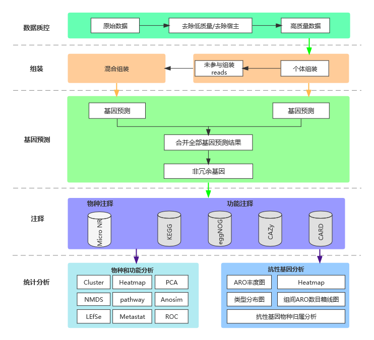
宏基因组信息分析流程图
3 分析结果
3.1 样品基本信息
下表展示了各个样品的基本信息
表3.1 样品信息表
SampleID Group
{% for each in row %}
{{each|safe}}
{% endfor %}
{% endfor %}
3.2 测序数据预处理
采用 Illumina测序平台测序获得的原始数据(Raw Data)存在一定比例低质量数据，为了保证后续分析的结果准确可靠，需要对原始的测序数据进行预处理，获取用于后续分析的有效数据(Clean Data)。具体处理步骤如下：
- 去除所含低质量碱基（质量值< 15）超过一定比例（默认设为 40%）的 reads；
- 去除 N 碱基达到一定比例的 reads（默认为5bp）；
- 去除Adapter 序列, fastp默认值；
- 去除长度小于15bp的序列；
- 如果样品存在宿主污染，需与宿主序列进行比对，过滤掉可能来源于宿主[6,7,8]（默认采用 Bowtie2 软件，参数设置: --end-to-end, --sensitive, -I 200, -X 400）的 reads；
上述的处理步骤均是对 Read 1 和 Read 2 进行操作
表3.2 测序数据预处理统计
{% for x in qc_stat_list[0] %}
{{x|safe}}
{% endfor %}
{% for each in qc_stat_list[1:] %}
{% for x in each %}
{{x|safe}}
{% endfor %}
{% endfor %}
说明：
Sample表示样本名
RawData：表示下机原始数据
Clean：表示过滤得到的有效数据
bases：数据中碱基数目
Q20：表示 数据 中测序错误率小于0.01(质量值大于 20)
Q30：表示 数据 中测序错误率小于0.001(质量值大于 30)
GC：数据中碱基的 GC 含量
图3.2 clean reads数据碱基分布图
{% for gc_png in gc_png_list %}
-

{% endfor %}
3.3 Metagenome 组装
- 经过预处理后得到 Clean Data，使用 MEGAHIT 组装软件进行组装分析( Assembly Analysis )；组装参数： --k-min 35 --k-max 95 --k-step 20 --min-contig-len 500；
- 将各样品质控后的 CleanData 采用 Bowtie2 软件比对至各样品组装后的 contigs 上，获取未被利用上的 PE reads；比对参数[11,6]： -I 200, -X 400；
- 将各样品未被利用上的 reads 放在一起，进行混合组装[7,10]，组装参数与单样品组装参数相同；
- 对于单样品和混合组装生成的 contigs[12,6,13,14] ，利用QUAST对组装结果进行评估；并进行统计分析和后续基因预测；
表 3.3 各样品组装结果 contigs 基本信息统计（>=500bp）
{% for x in assembly_stat_list[0] %}
{{x|safe}}
{% endfor %}
{% for each in assembly_stat_list[1:] %}
{% for x in each %}
{{x|safe}}
{% endfor %}
{% endfor%}
说明：
index：样本名称
# contigs：表示组装得到的 contigs 条数
Total Len：表示组装得 contigs 的总长
Largest length：表示 contigs 的最大长度
N50：N50表示将 contigs 按照长度进行排序，然后由长到短加和，当加和值达到 contigs 总长的 50% contigs 的长度值
3.4 基因预测及丰度分析
3.4.1 基因预测及丰度分析基本步骤
- 从各样品及混合组装的 contigs（>=500bp）出发，采用 MetaGeneMark[15,7,16,14,17] 进行 ORF (Open Reading Frame) 预测，采用默认参数；
- 从预测结果出发，过滤掉长度小于 100nt[18,11,10,12,13]的预测基因；并简化预测基因名称；
- 合并各样品及混合组装的 ORF 预测结果，利用 CD-HIT[19,20]软件进行去冗余，以获得非冗余的初始 gene catalogue（此处，操作上，将非冗余的连续基因编码的核酸序列称之为 genes[12]），默认以 identity 95%, coverage 90% 进行聚类[16,14]，并选取最长的序列为代表性序列；采用参数：-c 0.95, -G 0, -aS 0.9, -g 1, -d 0；
- 采用 Bowtie2，将各样品的 Clean Data 比对至初始 gene catalogue，计算得到基因在各样品中比对上的 reads 数目；比对参数[10,14]：--end-to-end, --sensitive, -I 200, -X 400
- 过滤掉在各个样品中支持 reads 数目<=2[12] 的基因，获得最终用于后续分析的 gene catalogue（Unigenes）；
- 从比对上的 reads 数目及基因长度出发，计算得到各基因在各样品中的丰度信息，计算公式[21,22,23]如下所示；
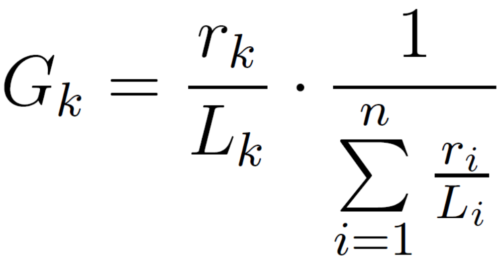
说明：r 为比对上基因的 reads 数目，L 为基因的长度
- 基于 gene catalogue 中各基因在各样品中的丰度信息，进行基本信息统计，core-pan 基因分析，样品间相关性分析，及基因数目韦恩图分析；
3.4.2 gene catalogue 基本信息统计
表 3.4.2 gene catalogue 基本信息统计表
{% for each in uniq_gene_stat_list %}
{% for x in each %}
{{x|safe}}
{% endfor %}
{% endfor %}
sample 表示样本名称（Unigenes 表示非冗余基因）；
ORFs NO. 表示 sample 中基因的数目；
integrity:start 表示只含有起始密码子的基因数目及百分比；
integrity:end 表示只含有终止密码子的基因数目及百分比；
integrity:none 表示没有起始密码子也没有终止密码子的基因数目及百分比；
integrity:all 表示完整基因（既有起始密码子也有终止密码子）数目的百分比；
Total Len.(Mbp) 表示 gene catalogue 中基因的总长，单位是百万；
Average Len. 表示 gene catalogue 中基因的平均长度；
GC Percent 表示预测的 gene catalogue 中基因的整体 GC 含量值；
图 3.4.2 gene catalogue 长度分布统计

说明：纵轴 Counts 表示 gene catalogue 中基因的数目；横轴表示 gene catalogue 中基因的长度。
3.4.3 core-pan 基因分析
从基因在各样品中的丰度表出发，可以获得各样品的基因数目信息，通过随机抽取不同数目的样品，可以获得不同数目样品组合间的基因数目，由此我们构建和绘制了 Core 和 Pan 基因的稀释曲线，图片展示如下：
图 3.4.3 core-pan 基因稀释曲线


说明：a) Core基因稀释曲线；b) Pan基因稀释曲线。横坐标表示抽取的样品个数；纵坐标表示抽取的样品组合的基因数目。
3.4.4 基因数目差异分析
为了考察组与组间的基因数目差异情况，绘制了组间基因数目差异箱图，展示结果如下：
图 3.4.4.1 组间基因数目差异箱图

说明：横坐标为各个分组信息；纵坐标为基因数目。
为了考察指定样品（组）间的基因数目分布情况，分析不同样品（组）之间的基因共有、特有信息，绘制了韦恩图(Venn Graph)或花瓣图，展示结果如下：
图 3.4.4.2 基因数目韦恩图（花瓣图）分析

说明：当样本（组）数小于5时，展示韦恩图，当样本（组）数超过5个时，展示花瓣图；图中，每个圈代表一个样品；圈和圈重叠部分的数字代表样品之间共有的基因个数；
没有重叠部分的数字代表样品的特有基因个数。
3.4.5 基于基因数目的样品间相关性分析
生物学重复是任何生物学实验所必须的，高通量测序技术也不例外。样品间基因丰度相关性是检验实验可靠性和样本选择是否合理性的重要指标。相关系数越接近1，表明样品之间基因丰度模式的相似度越高。
图 3.4.5 样品间相关系数热图

说明：图中，不同颜色代表 spearman 相关系数的高低；相关系数与颜色间的关系见右侧图例说明；颜色越深代表样品间相关系数的绝对值越大；
椭圆向左偏表明相关系数为正，右偏为负；椭圆越扁说明相关系数的绝对值越大。
3.5 物种注释
3.5.1 物种注释基本步骤
- genes 与物种数据库进行比对：DIAMOND软件[24]将 Unigenes 与从 NCBI 的 NR(Version: 2018.01) 数据库中抽提出的细菌(Bacteria)、真菌(Fungi)、古菌(Archaea)和病毒(Viruses)序列进行比对（blastp，evalue <= 1e-5）[6]；
- LCA算法：由于每一条序列可能会有多个比对结果，得到多个不同的物种分类信息，为了保证其生物意义，利用 MEGAN[25] 软件的LCA算法，得到该序列最终的物种注释信息；
- 从 LCA 注释结果及基因丰度表出发，获得各个样品在各个分类层级（界门纲目科属种）上的丰度信息，对于某个物种在某个样品中的丰度，等于注释为该物种的基因丰度的加和[7,26,14]；
- 从 LCA 注释结果及基因丰度表出发，获得各个样品在各个分类层级（界门纲目科属种）上的基因数目表，对于某个物种在某个样品中的基因数目，等于在注释为该物种的基因中，丰度不为 0 的基因数目；
- 从各个分类层级（界门纲目科属种）上的丰度表出发，进行 Krona 分析，相对丰度概况展示，丰度聚类热图展示，PCA 和 NMDS 降维分析，Anosim组间（内）差异分析，组间差异物种的Metastat和LEfSe多元统计分析；
3.5.2 物种相对丰度概况
为了综合而直观的展示各样品中，不同分类层级的物种相对丰度，我们采用 Krona[27] 对物种注释结果进行可视化展示，Krona 示例图如下所示，详细结果
请点击。
图 3.5.2.1 使用 Krona 对物种注释结果进行展示（示例图）
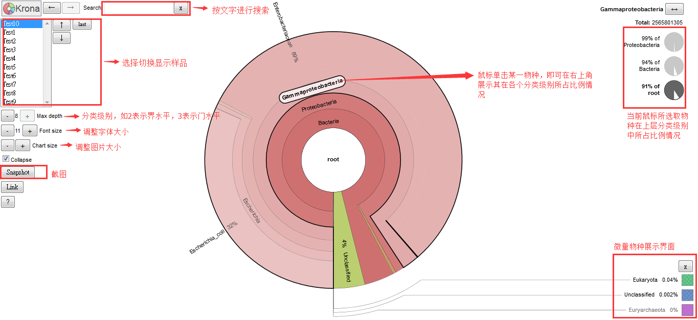
说明：图中，圆圈从内到外依次代表不同的分类级别（界门纲目科属种）；扇形的大小代表不同物种的相对比例；更多详细的信息请参考 KRONA 展示结果详解。
从不同分类层级的相对丰度表出发，选取出在各样品（组）中的最大相对丰度排名前 10 的物种，并将其余的物种设置为 Others，绘制出各样品对应的物种注释结果在不同分类层级上的相对丰度柱形图。
图 3.5.2.2 门水平和属水平的物种相对丰度柱形图（样品）


说明：a）门水平相对丰度柱形图；b）属水平相对丰度柱形图。横轴表示样品名称；纵轴表示注释到某类型的物种的相对比例；各颜色区块对应的物种类别见右侧图例。
图 3.5.2.3 门水平和属水平的物种相对丰度柱形图（组）


说明：a）门水平相对丰度柱形图；b）属水平相对丰度柱形图。横轴表示样品名称；纵轴表示注释到某类型的物种的相对比例；各颜色区块对应的物种类别见右侧图例。
3.5.3 注释基因数目及相对丰度聚类分析
从不同分类层级的相对丰度表出发，选取丰度排名前 35 的属及它们在每个样品中的丰度信息绘制热图，并从物种层面进行聚类，便于结果展示和信息发现，从而找出样品中聚集较多的物种，结果展示见下图：
图 3.5.3 属水平基因数目及丰度聚类热图


说明：a) Unigenes 注释数目统计热图：横轴为样品名称；纵轴为物种信息；不同颜色代表 Unigenes 数目的高低；b) 属水平相对丰度聚类热图：横向为样品信息；纵向为物种信息；图中左侧的聚类树为物种聚类树；中间热图对应的值为每一行物种相对丰度经过标准化处理后得到的 Z 值，即一个样品在某个分类上的 Z 值为样品在该分类上的相对丰度和所有样品在该分类的平均相对丰度的差除以所有样品在该分类上的标准差所得到的值。
3.5.4 基于物种丰度的降维分析
目前适用于生态学研究的降维分析主要是主成分分析 (PCA，Principal Component Analysis)和无度量多维标定法（NMDS，Non-Metric Multi-Dimensional Scaling）分析。
其中，PCA是基于线型模型的一种降维分析，它应用方差分解的方法对多维数据进行降维，从而提取出数据中最主要的元素和结构[28]；PCA 能够提取出最大程度反映样品间差异的两个坐标轴，
从而将多维数据的差异反映在二维坐标图上，进而揭示复杂数据背景下的简单规律。而NMDS是非线性模型，其目的是为了克服线性模型的缺点，更好地反映生态学数据的非线性结构[29]，应用NMDS分析，
根据样本中包含的物种信息，以点的形式反映在多维空间上，而不同样本间的差异程度则是通过点与点间的距离体现，能够反映样本的组间或组内差异等。 基于不同分类层级的物种丰度表，
我们进行了 PCA 和 NMDS分析，如果样品的物种组成越相似，则它们在 PCA 和 NMDS 图中的距离则越接近。
图 3.5.4 基于门水平的物种 PCA 和 NMDS 结果展示


说明：a）门水平PCA分析，横坐标表示第一主成分，百分比则表示第一主成分对样品差异的贡献值；纵坐标表示第二主成分，百分比表示第二主成分对样品差异的贡献值；图中的每个点表示一个样品，同一个组的样品使用同一种颜色表示；b）门水平NMDS分析，图中的每个点表示一个样品，点与点之间的距离表示差异程度，同一个组的样品使用同一种颜色表示；Stress小于0.2时，表明NMDS分析具有一定的可靠性。
3.5.5 基于物种丰度的Bray-Curtis 距离的降维分析
主坐标分析（PCoA，Principal Co-ordinates Analysis），是通过一系列的特征值和特征向量排序从多维数据中提取出最主要的元素和结构。
我们基于Bray-Curtis 距离来进行PCoA分析，并选取贡献率最大的主坐标组合进行作图展示。如果样品距离越接近，表示物种组成结构越相似，
因此群落结构相似度高的样品倾向于聚集在一起，群落差异很大的样品则会远远分开。 基于不同分类层级的物种丰度表得到Bray-Curtis 距离矩阵，我们进行了 PCoA分析。基于门水平的PCoA分析结果展示如下：
图 3.5.5 基于门水平的物种 PCoA 结果展示

说明：横坐标表示一个主成分，纵坐标表示另一个主成分，百分比表示主成分对样品差异的贡献值；图中的每个点表示一个样品，同一个组的样品使用同一种颜色表示。
3.5.6 基于物种丰度的Anosim分析
Anosim分析是一种非参数检验，用来检验组间的差异是否显著大于组内差异，从而判断分组是否有意义，详细计算过程可查看Anosim。基于物种门水平的Anosim分析结果如下：
图 3.5.6 基于门水平的Anosim分析

说明：横向为分组信息，纵向为距离信息。Between为两组合并信息，between中位线高于另外两组中位线为分组信息较好。R-value介于（-1，1）之间，R-value大于0，说明组间差异显著。R-value小于0，说明组内差异大于组间差异，统计分析的可信度用 P-value 表示，P< 0.05 表示统计具有显著性。
3.5.7 基于物种丰度的样品聚类分析
为了研究不同样品的相似性，还可以通过对样品进行聚类分析，构建样品的聚类树。Bray-Curtis 距离是系统聚类法中使用最普遍的一个距离指标，它主要用来刻画样品间的相近程度，它的大小是进行样品分类的主要依据。
从基因在各样品中的丰度表出发，以 Bray-Curtis 距离矩阵进行样品间聚类分析，并将聚类结果与各样品在门水平上的物种相对丰度整合进行展示。
图 3.5.7 基于 Bray-Curtis 距离的聚类树

说明：图中，左侧是 Bray-Curtis 距离聚类树结构；右侧的是各样品在门水平上的物种相对丰度分布图。
3.5.8 组间差异物种的Metastat分析
为了研究组间具有显著性差异的物种，从不同层级的物种丰度表出发，利用 Metastats[30]方法对组间的物种丰度数据进行假设检验得到 p 值，通过对 p 值的校正，得到 q 值；最后根据 q 值筛选具有显著性差异的物种，并绘制差异物种在组间的丰度分布箱图。
图 3.5.8 显著差异物种的箱图展示树
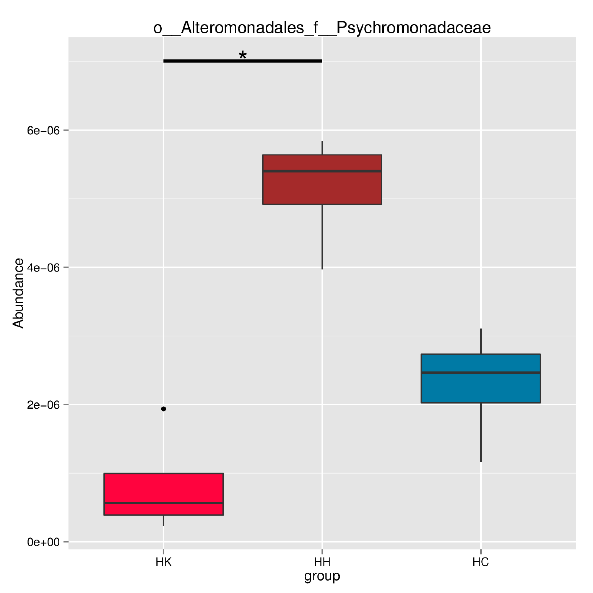
说明：图中，横轴为样品分组；纵向为对应物种的相对丰度。横线代表具有显著性差异的两个分组，没有则表示此物种在两个分组间不存在差异。“＊”表示两组间差异显著（q value < 0.05），“＊＊”表示两组间差异极显著（q value < 0.01）。
3.5.9 组间差异物种的LEfSe分析
为了筛选组间具有显著差异的物种Biomarker，首先通过秩和检验的方法检测不同分组间的差异物种并通过LDA（线性判别分析）实现降维并评估差异物种的影响大小，
即得到LDA score [31]；组间差异物种的LEfSe分析结果包括三部分，分别是LDA值分布柱状图，进化分支图（系统发育分布）和组间具有统计学差异的Biomarker在不同组中丰度比较图。差异物种的LDA值分布图和进化分支图如下：
图 3.5.9 差异物种的LDA值分布图和进化分支图
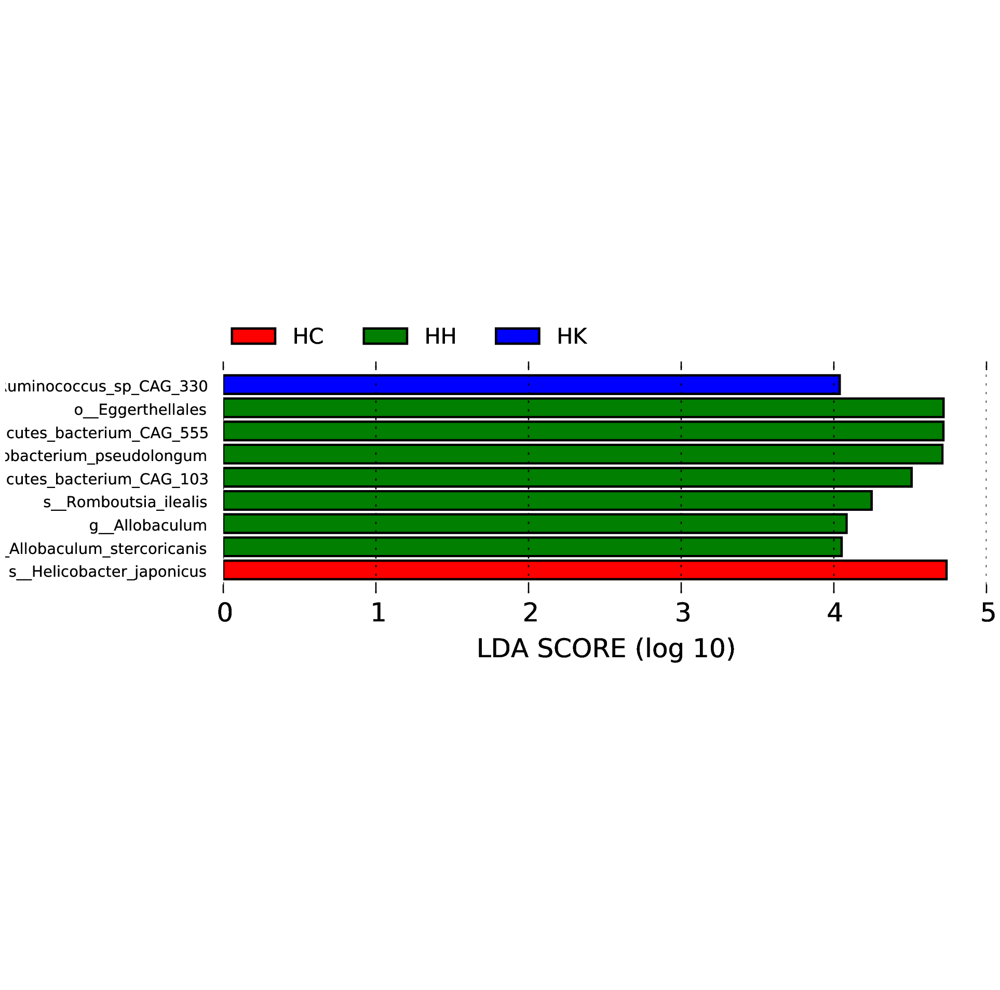
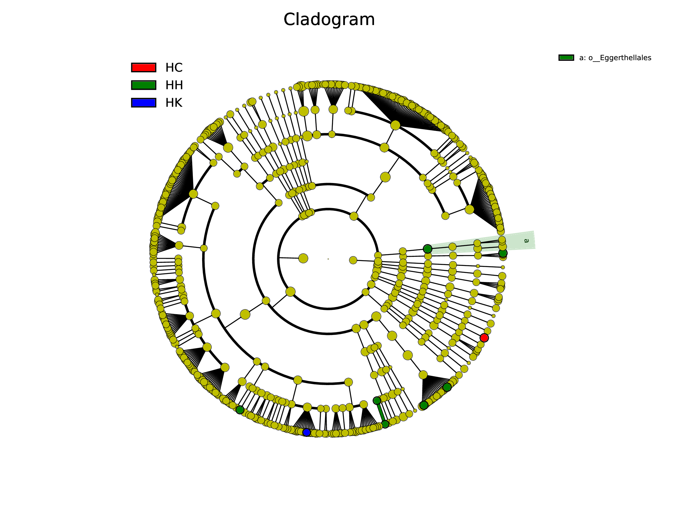
说明：上图为差异物种的LDA值分布图，LDA值分布柱状图中展示了LDA Score大于设定值（默认设置为4）的物种，即组间具有统计学差异的Biomarker，
柱状图的长度代表差异物种的影响大小（即为 LDA Score）。下图为差异物种的进化分支图，由内至外辐射的圆圈代表了由门至属（或种）的分类级别。
在不同分类级别上的每一个小圆圈代表该水平下的一个分类，小圆圈直径大小与相对丰度大小呈正比。着色原则：无显著差异的物种统一着色为黄色，
差异物种Biomarker跟随组进行着色，红色节点表示在红色组别中起到重要作用的微生物类群，绿色节点表示在绿色组别中起到重要作用的微生物类群。图中英文字母表示的物种名称在右侧图例中进行展示。
3.6 常用功能数据库注释
目前常用的功能数据库主要有：
Kyoto Encyclopedia of Genes and Genomes (KEGG)[32,33]; Version: 2018.01；
Evolutionary genealogy of genes: Non-supervised Orthologous Groups (eggNOG)[34]; Version: 4.5；
Carbohydrate-Active enzymes Database (CAZy)[35]; Version: 2018.01；
KEGG 数据库于 1995 年由 Kanehisa Laboratories 推出 0.1 版，目前发展为一个综合性数据库，其中最核心的为 KEGG PATHWAY 和 KEGG ORTHOLOGY 数据库。
在 KEGG ORTHOLOGY 数据库中，将行使相同功能的基因聚在一起，称为 Ortholog Groups (KO entries)，每个 KO 包含多个基因信息，并在一至多个 pathway 中发挥作用。
而在 KEGG PATHWAY 数据库中，将生物代谢通路划分为 6 类，分别为：细胞过程（Cellular Processes）、环境信息处理（Environmental Information Processing）、
遗传信息处理（Genetic Information Processing）、人类疾病（Human Diseases）、新陈代谢（Metabolism）、生物体系统（Organismal Systems），
其中每类又被系统分类为二、三、四层。第二层目前包括有 57个种子 pathway；第三层即为其代谢通路图；第四层为每个代谢通路图的具体注释信息。
eggNOG 数据库是利用 Smith-Waterman 比对算法对构建的基因直系同源簇 (Orthologous Groups) 进行功能注释，eggNOG V5 涵盖了 5090 个物种的基因，构建了约 4.4M Orthologous Groups。
CAZy 数据库是研究碳水化合物酶的专业级数据库，主要涵盖 6 大功能类：糖苷水解酶（Glycoside Hydrolases ，GHs），糖基转移酶（Glycosyl Transferases，GTs），
多糖裂合酶（Polysaccharide Lyases，PLs），碳水化合物酯酶（Carbohydrate Esterases，CEs），辅助氧化还原酶(Auxiliary Activities , AAs)和碳水化合物结合模块（Carbohydrate-Binding Modules， CBMs）。
3.6.1 功能注释基本步骤
- 序列比对：使用DIAMOND软件将 Unigenes 与各功能数据库进行比对（blastp，evalue <= 1e-5）[26,14]；
- 比对结果过滤：对于每一条序列的 比对结果，DIAMOND 参数--max-target-seqs 1，保留唯一比对结果[16,14,36,37]；
- 从比对结果出发，统计不同功能层级的相对丰度（各功能层级的相对丰度等于注释为该功能层级的基因的相对丰度之和[7,14]），其中，KEGG 数据库划分为 6 个层级，eggNOG 数据库划分为 3 个层级，
CAZy 数据库划分为 3 个层级，各数据库的详细划分层级如下所示；
数据库名称 划分层级 该层级的描述 KEGG level1 KEGG 代谢通路第一层级 6 大代谢通路； KEGG level2 KEGG 代谢通路第二层级 57 种子 pathway； KEGG level3 KEGG pathway id（例：map00010）； KEGG KO KEGG ortholog group (例：K00010)； KEGG ec KEGG EC Number（例：EC 3.4.1.1）； eggNOG level1 24 大功能类； eggNOG level2 ortholog group description； CAZy level1 6 大功能类； CAZy level2 CAZy family（例：GT51）； CAZy level3 EC number（例：murein polymerase (EC 2.4.1.129)）；
- 从功能注释结果及基因丰度表出发，获得各个样品在各个分类层级上的基因数目表，对于某个功能在某个样品中的基因数目，等于在注释为该功能的基因中，丰度不为 0 的基因数目；
- 从各个分类层级上的丰度表出发，进行注释基因数目统计，相对丰度概况展示，丰度聚类热图展示，PCA和NMDS降维分析，基于功能丰度的Anosim组间（内）差异分析，代谢通路比较分析，组间功能差异的Metastat和LEfSe分析；
3.6.2 注释基因数目统计
从 Unigenes 注释结果出发，绘制各个数据库的注释基因数目统计图，展示结果如下图所示：
图 3.6.2 各数据库注释基因数目统计图
{% for gene_count_png in func_gene_count_png_list %}
-

{% endfor %}
说明：条形图上的数字代表注释上的 Unigenes 数目；其余一个坐标轴是各数据库中 level1 各功能类的代码，代码的解释见对应的图例说明。
3.6.3 功能相对丰度概况
根据各个数据库的注释结果，绘制了样品（组）在各个数据库中对应层级上的相对丰度统计图。 以各样品在各个数据库中level1 层级上的相对丰度统计图为例展示。其余层级为相对丰度前10的注释结果。
图 3.6.3 功能注释在 level1 上的相对丰度柱形图
{% for relative_abundance_png in func_relative_abundance_png_list %}
-

{% endfor %}
说明：纵轴表示注释到某功能类的相对比例；横轴表示样品名称；各颜色区块对应的功能类别见右侧图例。
3.6.4 功能相对丰度聚类分析
根据所有样品在各个数据库中的功能注释及丰度信息，选取丰度排名前 35 的功能及它们在每个样品中的丰度信息绘制热图，并从功能差异层面进行聚类。
图 3.6.4 功能丰度聚类热图
{% for abundance_cluster_png in func_abundance_cluster_heatmap_png_list %}
-

{% endfor %}
说明：横向为样品信息；纵向为功能注释信息；图中左侧的聚类树为功能聚类树；中间热图对应的值为每一行功能相对丰度经过标准化处理后得到的 Z 值。
3.6.5 基于功能丰度的降维分析
基于不同数据库在各个分类层级的功能丰度进行 PCA 和 NMDS 降维分析，如果样品的功能组成越相似，则它们在降维图中的距离越接近。基于KEGG的KO、eggNOG的OG和CAZY 的 Level2 层级的功能丰度进行PCA 和 NMDS 分析的结果展示如下：
图 3.5.5 基于功能丰度的 PCA 和 NMDS 分析结果展示
{% for pca_png in func_abundance_pca_nmds_png_list %}
-


{% endfor %}
说明：a）PCA结果展示，横坐标表示第一主成分，百分比则表示第一主成分对样品差异的贡献值；
纵坐标表示第二主成分，百分比表示第二主成分对样品差异的贡献值；图中的每个点表示一个样品，同一个组的样品使用同一种颜色表示。b）NMDS结果展示，图中的每个点表示一个样品，
点与点之间的距离表示差异程度，同一个组的样品使用同一种颜色表示；Stress小于0.2时，表明NMDS分析具有一定的可靠性。
3.6.6 基于功能丰度的Bray-Curtis 距离的降维分析
基于不同数据库在各个分类层级的功能丰度计算Bray-Curtis 距离，然后进行 PCoA 分析，如果样品的功能组成越相似，则它们在降维图中的距离越接近。基于KEGG、eggNOG和CAZY 的 Level1 层级的功能丰度进行PCoA 分析的结果展示如下：
图 3.6.6 基于功能丰度的Bray-Curtis 距离的PCoA分析结果展示
{% for pcoa_png in func_abundance_pcoa_png_list %}
-

{% endfor %}
说明：PCoA结果展示，横坐标表示第一主成分，百分比则表示第一主成分对样品差异的贡献值；
纵坐标表示第二主成分，百分比表示第二主成分对样品差异的贡献值；图中的每个点表示一个样品，同一个组的样品使用同一种颜色表示。
3.6.7 基于功能丰度的Anosim分析
基于KEGG的KO、eggNOG的Level1和CAZY 的 Level2 层级的功能丰度进行Anosim 分析，用于检验基于功能丰度的组间差异是否显著大于组内差异。结果展示如下：
图 3.6.7 基于功能丰度的 Anosim 分析
{% for anosim_png in func_abundance_anosim_png_list %}
-

{% endfor %}
说明：横向为分组信息，纵向为距离信息。Between为两组合并信息，between中位线高于另外两组中位线为分组信息较好。
R-value介于（-1，1）之间，R-value大于0，说明组间差异显著。R-value小于0，说明组内差异大于组间差异，统计分析的可信度用 P-value 表示，P< 0.05 表示统计具有显著性。
3.6.8 基于功能丰度的样品聚类分析
为了研究不同样品的相似性，还可以通过对样品进行聚类分析，构建样品的聚类树。Bray-Curtis 距离是系统聚类法中使用最普遍的一个距离指标，它主要用来刻画样品间的相近程度，它的大小是进行样品分类的主要依据。
从各个数据库的功能丰度表出发，以 Bray-Curtis 距离矩阵进行样品间聚类分析，并将聚类结果与各样品在各数据库第一层级上的功能相对丰度整合展示。
图 3.6.8 基于Bray-Curtis距离的聚类树
{% for cluster_tree_png in func_abundance_cluster_tree_png_list %}
-

{% endfor %}
说明：从上至下依次为 KEGG, eggNOG, CAZy 的结果展示。图左侧是 Bray-Curtis 距离聚类树结构；右侧为各层是各样品在第一层级上的功能相对丰度分布。
3.6.9 组间功能差异的Metastat分析
为了研究组间具有显著性差异的功能，从不同层级的功能相对丰度表出发，利用 Metastats 方法对组间的功能丰度数据进行假设检验得到 p 值，通过对 p 值的校正，
得到 q 值；最后根据 q 值筛选具有显著性差异的功能，并绘制差异功能在组间的丰度分布箱图。
图 3.6.9.1 显著性差异功能箱图展示
{% for metastat_png in func_metastat_png_list %}
-

{% endfor %}
说明：从上至下依次为 KEGG, eggNOG, CAZy 的结果展示，图中横轴为样品分组，纵向为对应功能的相对丰度。横线代表具有显著性差异的两个分组，没有则表示此功能在两个分组间不存在差异。
“*”表示两组间差异显著（q value < 0.05），“**”表示两组间差异极显著（q value < 0.01）。
根据组间具有差异的功能进行PCA分析并绘制丰度聚类热图，展示结果如下:
图 3.6.9.2 基于显著性差异功能的 PCA 分析和丰度聚类热图
{% for pca_cluster in func_metastat_pca_heatmap_png_list %}
-


{% endfor %}
说明：从上至下依次为 KEGG, eggNOG, CAZy 的结果展示。a) 为显著性差异功能的丰度聚类热图：横向为样品信息；纵向为功能注释信息；
图中左侧的聚类树为功能聚类树；中间热图对应的值为每一行功能相对丰度经过标准化处理后得到的 Z 值；b) 为显著性差异功能的 PCA 图：横坐标表示第一主成分，
百分比则表示第一主成分对样品差异的贡献值；纵坐标表示第二主成分，百分比表示第二主成分对样品差异的贡献值；图中的每个点表示一个样品，同一个组的样品使用同一种颜色表示。
3.6.10 代谢通路比较分析
为了研究不同分组（不同样品）在代谢通路图中的差异，绘制了代谢通路网页版结果展示，整体网页版报告分为两部分：
第一部分为 KEGG pathway overview 图，图中蓝色线条展示了此次项目参与的代谢通路信息，在代谢通路图中，节点代表各种化合物，边代表一系列的酶类反应；
第二部分为注释到的 pathway 代谢通路图，在代谢通路图中，节点代表各种化合物, 方框代表酶类信息（默认边框为黑色，背景为白色），不同颜色深浅的方框背景色代表注释为该酶类的不同 Unigenes 数目，
黄色背景的酶类代表在分组间具有显著差异的酶类（若没有进行显著差异分析，则没有此部分信息）。
展示结果点击
图 3.6.10 多样品代谢通路比较分析示例图

3.7 抗性基因注释
不管是人肠道微生物还是其他环境微生物中，抗性基因是普遍存在的。抗生素的滥用导致人体和环境中微生物群落发生不可逆的变化，对人体健康和生态环境造成风险，
因此抗性基因的相关研究受到了研究者的广泛关注[38]。CARD是近年来新出现的抗性基因数据库，它具有信息全面，对用户友好，更新维护及时等优势。该数据库的核心构成
是Antibiotic Resistance Ontology（ARO），它整合了序列、抗生素抗性、作用机制、ARO之间的关联等信息，并在线提供ARO与PDB、NCBI等数据库的接口[39]。
3.7.1 抗性基因注释基本步骤
- 使用CARD数据库(v2.0.1)提供的Resistance Gene Identifier (RGI)软件将 Unigenes 与CARD数据库进行比对（RGI内置blastp，采用bitscore值对比对结果进行评分[40]）；
- 根据RGI的比对结果，结合Unigenes的丰度信息，统计出各ARO的相对丰度；
- 从ARO的丰度出发，进行丰度柱形图展示，丰度聚类热图展示，丰度分布圈图展示，组间ARO差异分析，抗性基因（注释到ARO的unigenes）物种归属分析等（对部分名称较长的ARO，用其前三个单词与下划线缩写的形式展示）。
3.7.2 抗性基因丰度概况
从抗性基因的相对丰度表出发，计算各个样品中ARO的含量和百分比，筛选出最大丰度排名前20的ARO结果展示如下：
图 3.7.2.1 不同ARO在各样品中的丰度柱形图


a）表示ARO在各个样品中所有基因的相对丰度，单位 ppm，是将原始相对丰度数据放大106倍的结果；b）表示top20 ARO在所有 ARO中的相对丰度，others为非top 20 ARO相对丰度总和。
为了更直观地从整体上观察各样品中ARO的丰度占比，更加直观的展示各ARO丰度的整体分布情况，选出最大丰度top10的ARO绘制Overview圈图，展示如下：
图 3.7.2.2 抗性基因Overview圈图

说明：圈图分为两个部分，右侧为样品信息，左侧为 ARO信息。内圈不同颜色表示不同的样品和 ARO，刻度为相对丰度，单位为 ppm，
左侧为某ARO各个样本中的相对丰度之和，右侧为各ARO在某样本中的相对丰度之和；外圈左侧为某ARO中各个样品的相对百分含量，外圈右侧为某样品中各ARO的相对百分含量。
CARD数据库中对抗性基因的抗性机制（Resistance Mechanism）进行归类， 根据这些抗性基因的作用机制与物种的关系，绘制如下抗性机制分布图：
图 3.7.2.3 抗性机制与物种Overview圈图

说明：圈图分为两个部分，右侧为门水平物种信息，左侧为抗性机制信息。内圈不同颜色表示不同物种和抗性的抗性机制，刻度为基因数目；左侧为物种中含有该类抗性机制的抗性基因数目之和，
右侧为不同抗性机制中该物种含有的抗性基因数目之和；外圈左侧为各物种中抗性基因占其所属抗性机制抗性基因的相对比例，外圈右侧为各抗性机制中抗性基因占其所属物种中抗性基因的相对比例
3.7.3 抗性基因类型的分布及其丰度聚类分析
为了反映各抗性基因类型（ARO） 在各样品中的分布情况，绘制ARO分布的黑白热图；同时，根据 ARO 在各样品中的丰度信息，选取排名前 30 的 ARO绘制丰度聚类热图，结果展示如下：
图 3.7.3 ARO分布及丰度聚类热图


说明：a）为ARO分布情况热图，横轴为样品名称，右侧纵轴为抗性基因类型 ARO 名称，黑色表示样品中含有该 ARO，白色表示样品中没有该 ARO；b）为ARO丰度聚类热图，
右侧纵轴为ARO 名称，左侧纵轴的聚类树为 ARO聚类树，中间热图对应的值为每一行 ARO 相对丰度经过标准化处理后得到的 Z 值。
3.7.4 基于抗性基因丰度的Anosim分析
基于抗性基因的丰度进行Anosim 分析，用于检验组间差异是否显著大于组内差异。结果展示如下：
图 3.7.4基于抗性基因丰度的Anosim分析
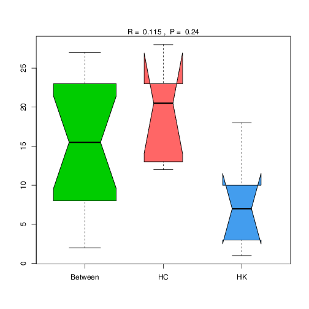
说明：横向为分组信息，纵向为距离信息。Between为两组合并信息，between中位线高于另外两组中位线为分组信息较好。R-value介于（-1，1）之间，
R-value大于0，说明组间差异显著。R-value小于0，说明组内差异大于组间差异，统计分析的可信度用 P-value 表示，P< 0.05 表示统计具有显著性。
3.7.5 组间抗性基因数目差异分析
为了考察样品组间的抗性基因数目与ARO数目差异情况，绘制了组间抗性基因数目和ARO数目差异箱图，展示结果如下:
图 3.7.5.1 抗性基因及ARO数目差异箱图


说明：a）表示各组间抗性基因数目差异，b）为各组间ARO数目差异。
为了考察指定样品（组）间的抗性基因数目分布情况，分析不同样品（组）之间的基因共有、特有信息，绘制了韦恩图(或花瓣图)，展示结果如下:
图 3.7.5.2 各样品（组间）抗性基因箱韦恩图（花瓣图）分析
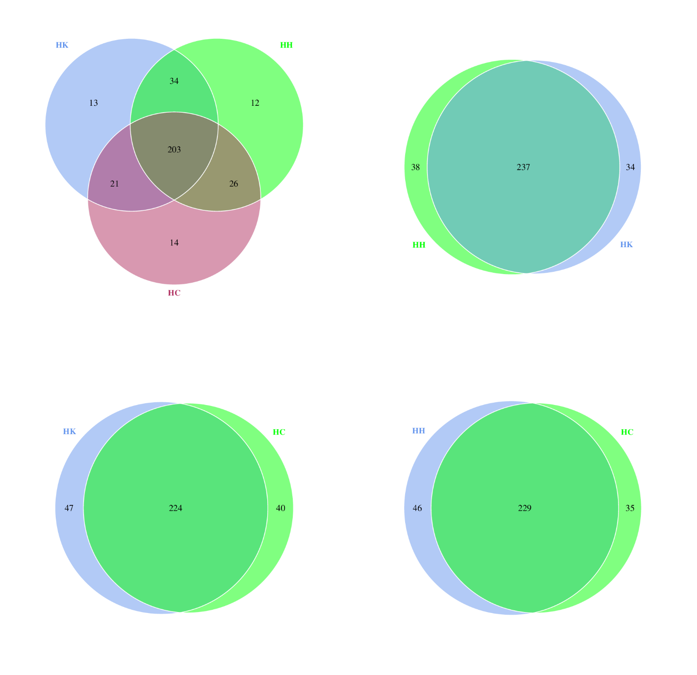
说明：当样本（组）数小于5时，展示韦恩图，当样本（组）数超过5个时，展示花瓣图；图中，每个圈代表一个样品；圈和圈重叠部分的数字代表样品之间共有的抗性基因个数；
没有重叠部分的数字代表样品的特有抗性基因个数。
4 参考文献
- [1] Chen, K., & Pachter, L. (2005). Bioinformatics for whole-genome shotgun sequencing of microbial communities. PLoS computational biology, 1(2), e24.
- [2] Handelsman, J., Rondon, M. R., Brady, S. F., Clardy, J., & Goodman, R. M. (1998). Molecular biological access to the chemistry of unknown soil microbes: a new frontier for natural products. Chemistry & biology, 5(10), R245-R249.
- [3] Tringe, S. G., & Rubin, E. M. (2005). Metagenomics: DNA sequencing of environmental samples. Nature reviews genetics, 6(11), 805-814.
- [4] Tringe, S. G., Von Mering, C., Kobayashi, A., Salamov, A. A., Chen, K., Chang, H. W., ... & Rubin, E. M. (2005). Comparative metagenomics of microbial communities. Science, 308(5721), 554-557.
- [5] Raes, J., Foerstner, K. U., & Bork, P. (2007). Get the most out of your metagenome: computational analysis of environmental sequence data. Current opinion in microbiology, 10(5), 490-498.
- [6] Karlsson FH, Tremaroli V, Nookaew I, Bergstrom G, Behre CJ, Fagerberg B, Nielsen J, Backhed F: Gut metagenome in European women with normal, impaired and diabetic glucose control. Nature 2013, 498(7452):99-103.
- [7] Karlsson F H, Fåk F, Nookaew I, et al. Symptomatic atherosclerosis is associated with an altered gut metagenome[J]. Nature communications, 2012, 3: 1245.
- [8] Scher J U, Sczesnak A, Longman R S, et al. Expansion of intestinal Prevotella copri correlates with enhanced susceptibility to arthritis[J]. Elife, 2013, 2: e01202.
- [9] Dinghua Li, Chi-Man Liu, Ruibang Luo, Kunihiko Sadakane, Tak-Wah Lam, MEGAHIT: an ultra-fast single-node solution for large and complex metagenomics assembly via succinct de Bruijn graph, Bioinformatics, Volume 31, Issue 10, 15 May 2015, Pages 1674–1676
- [10] Qin J, Li R, Raes J, et al. A human gut microbial gene catalogue established by metagenomic sequencing[J]. nature, 2010, 464(7285): 59-65.
- [11] Nielsen H B, Almeida M, Juncker A S, et al. Identification and assembly of genomes and genetic elements in complex metagenomic samples without using reference genomes[J]. Nature biotechnology, 2014, 32(8): 822-828.
- [12] Zeller G, Tap J, Voigt A Y, et al. Potential of fecal microbiota for early‐stage detection of colorectal cancer[J]. Molecular systems biology, 2014, 10(11): 766.
- [13] Sunagawa S, Coelho L P, Chaffron S, et al. Structure and function of the global ocean microbiome[J]. Science, 2015, 348(6237): 1261359.
- [14] Li J, Jia H, Cai X, et al. An integrated catalog of reference genes in the human gut microbiome[J]. Nature biotechnology, 2014, 32(8): 834-841.
- [15] Oh J, Byrd A L, Deming C, et al. Biogeography and individuality shape function in the human skin metagenome[J]. Nature, 2014, 514(7520): 59-64.
- [16] Qin N, Yang F, Li A, et al. Alterations of the human gut microbiome in liver cirrhosis[J]. Nature, 2014.
- [17] Mende D R, Waller A S, Sunagawa S, et al. Assessment of metagenomic assembly using simulated next generation sequencing data[J]. PloS one, 2012, 7(2): e31386.
- [18] Zhu, Wenhan, Alexandre Lomsadze, and Mark Borodovsky. "Ab initio gene identification in metagenomic sequences." Nucleic acids research 38.12 (2010): e132-e132
- [19] Li W, Godzik A: Cd-hit: a fast program for clustering and comparing large sets of protein or nucleotide sequences. Bioinformatics 2006, 22(13):1658-1659.
- [20] Fu L, Niu B, Zhu Z, Wu S, Li W: CD-HIT: accelerated for clustering the next-generation sequencing data. Bioinformatics 2012, 28(23):3150-3152.
- [21] Villar E, Farrant G K, Follows M, et al. Environmental characteristics of Agulhas rings affect interocean plankton transport[J]. Science, 2015, 348(6237): 1261447.
- [22] Cotillard A, Kennedy S P, Kong L C, et al. Dietary intervention impact on gut microbial gene richness[J]. Nature, 2013, 500(7464): 585-588.
- [23] Le Chatelier E, Nielsen T, Qin J, et al. Richness of human gut microbiome correlates with metabolic markers[J]. Nature, 2013, 500(7464): 541-546.
- [24] Buchfink B, Xie C, Huson DH. Fast and sensitive protein alignment using DIAMOND. Nat Methods 2015;12:59-60.
- [25] Huson, Daniel H., et al. "Integrative analysis of environmental sequences using MEGAN4." Genome research 21.9 (2011): 1552-1560.
- [26] Feng Q, Liang S, Jia H, et al. Gut microbiome development along the colorectal adenoma–carcinoma sequence[J]. Nature communications, 2015, 6.
- [27] Ondov B D, Bergman N H, Phillippy A M. Interactive metagenomic visualization in a Web browser[J]. BMC bioinformatics, 2011, 12(1): 385.
- [28] Rao C R. The Use and Interpretation of Principal Component Analysis in Applied Research[J]. Sankhyā: The Indian Journal of Statistics, Series A (1961-2002), 1964, 26(4):329-358.
- [29] Legendre P, Legendre L. Numerical ecology, 2nd edition[J].1998.
- [30] White J R, Nagarajan N, Pop M. Statistical methods for detecting differentially abundant features in clinical metagenomic samples[J]. PLoS Comput Biol, 2009, 5(4): e1000352.
- [31] Segata N, Izard J, Waldron L, et al. Metagenomic biomarker discovery and explanation[J]. Genome Biology, 2011, 12(6):1-18.
- [32] Kanehisa M, Goto S, Hattori M, Aoki-Kinoshita KF, Itoh M, Kawashima S, et al. (2006). From genomics to chemical genomics: new developments in KEGG. Nucleic Acids Res 34(Database issue): D354–7.
- [33] Kanehisa M, Furumichi M, Mao T, et al. KEGG: new perspectives on genomes, pathways, diseases and drugs[J]. Nucleic Acids Research, 2017, 45(D1):D353.
- [34] Jaime Huerta-Cepas, Damian Szklarczyk, Kristoffer Forslund, Helen Cook, Davide Heller, Mathias C. Walter, Thomas Rattei, Daniel R. Mende, Shinichi Sunagawa, Michael Kuhn, Lars Juhl Jensen, Christian von Mering, Peer Bork; eggNOG 4.5: a hierarchical orthology framework with improved functional annotations for eukaryotic, prokaryotic and viral sequences, Nucleic Acids Research, Volume 44, Issue D1, 4 January 2016, Pages D286–D293
- [35] Cantarel BL, Coutinho PM, Rancurel C, Bernard T, Lombard V, Henrissat B (2009) .The Carbohydrate-Active EnZymes database (CAZy): an expert resource for Glycogenomics. Nucleic Acids Res 37:D233-238.
- [36] Qin J, Li Y, Cai Z, et al. A metagenome-wide association study of gut microbiota in type 2 diabetes[J]. Nature, 2012, 490(7418): 55-60.
- [37] Bäckhed F, Roswall J, Peng Y, et al. Dynamics and Stabilization of the Human Gut Microbiome during the First Year of Life[J]. Cell host & microbe, 2015, 17(5): 690-703.
- [38] Martínez J L, Coque T M, Baquero F. What is a resistance gene? Ranking risk in resistomes[J]. Nature Reviews Microbiology, 2014, 13(2):116-23.
- [39] Jia B, Raphenya A R, Alcock B, et al. CARD 2017: expansion and model-centric curation of the comprehensive antibiotic resistance database[J]. Nucleic Acids Research, 2017, 45(D1):D566.
- [40] Mcarthur A G, Waglechner N, Nizam F, et al. The Comprehensive Antibiotic Resistance Database[J]. Antimicrobial Agents & Chemotherapy, 2013, 57(7):3348.
5 附录
5.1 方法描述/Methods
方法描述/Methods：PDF
信息分析方法描述(中文版)：PDF
信息分析方法描述(英文版)：PDF
5.2 交付文件目录列表
交付文件说明：html
5.3 常见数据格式说明
常见数据格式说明：pdf
5.4 相关软件及链接
MEGAHIT(v1.0.4): https://github.com/voutcn/megahit
Bowtie2( Version: 2.2.4 ): http://bowtie-bio.sourceforge.net/bowtie2/index.shtml
MetaGeneMark（Version: 2.10）:http://exon.gatech.edu/GeneMark/metagenome/Prediction
CD-HIT（Version: 4.5.8): http://www.bioinformatics.org/cd-hit/
5.5 备注
结果文件建议使用Excel或者EditPlus等专业文本编辑器打开。
推荐使用火狐浏览器进行网页版结题报告浏览，下载地址：http://www.firefox.com.cn/download/
{% endblock body %}
微生物群体几乎存在于这个世界每一个生态群落之中，从个体体表到肠道，从高原空气到深海海底淤泥，从冰川冻湖到火山岩浆都无处不在，并扮演着不可或缺的角色。 对微生物的研究从 Antoni van Leeuwenhoek 发明显微镜开始的数百年中，主要基于纯培养的研究方式。在数以万亿计的微生物种类中，仅 0.1%~1% 的物种可培养[1] ， 极大地限制了对微生物多样性资源的研究和开发。
Metagenomics(翻译成元基因组学，或者翻译成宏基因组学)，是由 Handelman[2] 最先提出的一种直接对微生物群体中包含的全部基因组信息进行研究的手段。之后， Kevin[1] 等对 Metagenomics 进行了定义，即“绕过对微生物个体进行分离培养，应用基因组学技术对自然环境中的微生物群落进行研究”的学科。它规避了对样品中的 微生物进行分离培养，提供了一种对不可分离培养的微生物进行研究的途径，更真实的反应样本中微生物组成、互作情况，同时在分子水平对其代谢通路、基因功能进行研究[3]。
近年来，随着测序技术和信息技术的快速发展，利用新一代测序技术(Next Generation Sequencing)研究 Metagenomics，能快速准确的得到大量生物数据和丰富的微生物研究信息， 从而成为研究微生物多样性和群落特征的重要手段[4,5]。如致力于研究微生物与人类疾病健康关系的人体微生物组计划(HMP, Human Microbiome Project,http://www.hmpdacc.org/ ， 研究全球微生物组成和分布的全球微生物组计划(EMP, Earth Microbiome Project, http://www.earthmicrobiome.org/ )都主要利用高通量测序技术进行研究。
从环境（如土壤、海洋、淡水、肠道等）中采集实验样本，将原始采样样本或已提取的 DNA 样本低温运输（ 0℃ 以下）送往我公司。我公司将对接收到的样品进行样品检测。
检测合格的 DNA 样品，进行文库构建以及文库检测，检测合格的文库将采用 Illumina PE150 进行测序，测序得到的下机数据(Raw Data)将用于后期信息分析。为了从源头上保证测序数据的准确性、 可靠性，对样品检测、建库、测序每一个生产步骤都严格把控，从根本上确保高质量数据的产出，具体的实验流程图如下：
2.1.1 DNA样品检测
(1) 琼脂糖凝胶电泳（AGE）分析 DNA 的纯度和完整性；
(2) Qubit 对 DNA 浓度进行精确定量；
2.1.2 文库构建及库检
检测合格的 DNA 样品用 Covaris 超声波破碎仪随机打断成长度约为 350bp 的片段，经末端修复、加 A尾、加测序接头、纯化、PCR 扩增等步骤完成整个文库制备。
文库构建完成后，先使用 Qubit2.0 进行初步定量，稀释文库至 2ng/ul，随后使用 Agilent 2100 对文库的 insert size 进行检测，insert size 符合预期后， 使用 Q-PCR 方法对文库的有效浓度进行准确定量（文库有效浓度 ＞3nM），以保证文库质量。
2.1.3 上机测序
库检合格后，把不同文库按照有效浓度及目标下机数据量的需求 pooling 后进行 Illumina PE150 测序。
- 数据质控：测序得到的原始数据(Raw Data)会存在一定比例的低质量数据，为了保证后续信息分析结果的准确可靠，首先要对原始数据进行质控及宿主过滤，得到有效数据(Clean Data)；
- Metagenome 组装：从各样品质控后的 Clean Data 出发，进行 Metagenome 组装，并将各样品未被利用上的 reads 放在一起进行混合组装，以期发现样品中的低丰度物种信息；
- 基因预测：从单样品和混合组装后的 scaftigs 出发，采用 MetaGeneMark 进行基因预测，并将各样品和混合组装预测产生的基因放在一起，进行去冗余，构建 gene catalogue， 从 gene catalogue 出发，综合各样品的 Clean Data，可获得 gene catalogue 在各样品中的丰度信息；
- 物种注释：从 gene catalogue 出发，和 MicroNR 库进行比对，获得每个基因（Unigene）的物种注释信息，并结合基因丰度表，获得不同分类层级的物种丰度表；
- 常用功能数据库注释：从 gene catalogue 出发，进行代谢通路(KEGG)，同源基因簇(eggNOG)，碳水化合物酶(CAZy)的功能注释和丰度分析；
- 数据挖掘：基于物种丰度表和功能丰度表，可以进行丰度聚类分析，PCA和NMDS 降维分析，Anosim分析，样品聚类分析；当有分组信息时，可以进行Metastat和LEfSe多元统计分析以及代谢通路比较分析，挖掘样品之间的物种组成和功能组成差异；
- 抗性基因注释：利用gene catalogue与抗生素抗性基因数据库CARD（The Comprehensive Antibiotic Resistance Database）进行注释，可以获得抗性基因丰度分布情况以及这些抗性基因的物种归属和抗性机制；
备注：
(1) 当样品数目小于3个时，无法进行 PCA，NMDS，CCA/RDA，聚类分析，丰度聚类热图分析；
(2) 当分组内的生物学重复数目小于3个时，诸如 Anosim，Metastat，LEfSe 等统计分析皆没有统计学意义，将不进行此类分析。
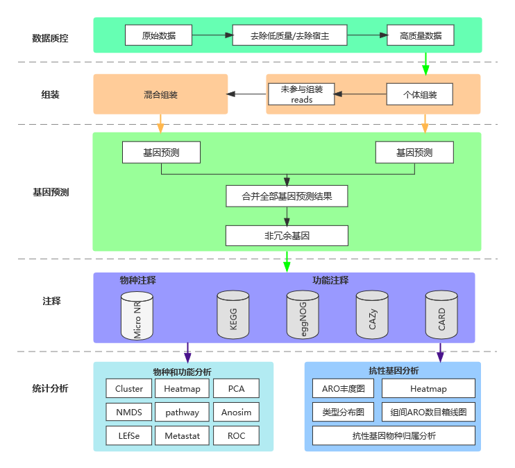
宏基因组信息分析流程图
下表展示了各个样品的基本信息
表3.1 样品信息表
| SampleID | Group |
|---|---|
| {{each|safe}} | {% endfor %}
采用 Illumina测序平台测序获得的原始数据(Raw Data)存在一定比例低质量数据，为了保证后续分析的结果准确可靠，需要对原始的测序数据进行预处理，获取用于后续分析的有效数据(Clean Data)。具体处理步骤如下：
- 去除所含低质量碱基（质量值< 15）超过一定比例（默认设为 40%）的 reads；
- 去除 N 碱基达到一定比例的 reads（默认为5bp）；
- 去除Adapter 序列, fastp默认值；
- 去除长度小于15bp的序列；
- 如果样品存在宿主污染，需与宿主序列进行比对，过滤掉可能来源于宿主[6,7,8]（默认采用 Bowtie2 软件，参数设置: --end-to-end, --sensitive, -I 200, -X 400）的 reads；
上述的处理步骤均是对 Read 1 和 Read 2 进行操作
表3.2 测序数据预处理统计
| {{x|safe}} | {% endfor %}||||||||
| {{x|safe}} | {% endfor %}||||||||
 Prev
Prev

说明：
Sample表示样本名
RawData：表示下机原始数据
Clean：表示过滤得到的有效数据
bases：数据中碱基数目
Q20：表示 数据 中测序错误率小于0.01(质量值大于 20)
Q30：表示 数据 中测序错误率小于0.001(质量值大于 30)
GC：数据中碱基的 GC 含量
图3.2 clean reads数据碱基分布图
-
{% for gc_png in gc_png_list %}
-
- 经过预处理后得到 Clean Data，使用 MEGAHIT 组装软件进行组装分析( Assembly Analysis )；组装参数： --k-min 35 --k-max 95 --k-step 20 --min-contig-len 500；
- 将各样品质控后的 CleanData 采用 Bowtie2 软件比对至各样品组装后的 contigs 上，获取未被利用上的 PE reads；比对参数[11,6]： -I 200, -X 400；
- 将各样品未被利用上的 reads 放在一起，进行混合组装[7,10]，组装参数与单样品组装参数相同；
- 对于单样品和混合组装生成的 contigs[12,6,13,14] ，利用QUAST对组装结果进行评估；并进行统计分析和后续基因预测；
表 3.3 各样品组装结果 contigs 基本信息统计（>=500bp）
| {{x|safe}} | {% endfor %}|||||||||||||||||||||||
| {{x|safe}} | {% endfor %}|||||||||||||||||||||||
说明：
index：样本名称
# contigs：表示组装得到的 contigs 条数
Total Len：表示组装得 contigs 的总长
Largest length：表示 contigs 的最大长度
N50：N50表示将 contigs 按照长度进行排序，然后由长到短加和，当加和值达到 contigs 总长的 50% contigs 的长度值
- 从各样品及混合组装的 contigs（>=500bp）出发，采用 MetaGeneMark[15,7,16,14,17] 进行 ORF (Open Reading Frame) 预测，采用默认参数；
- 从预测结果出发，过滤掉长度小于 100nt[18,11,10,12,13]的预测基因；并简化预测基因名称；
- 合并各样品及混合组装的 ORF 预测结果，利用 CD-HIT[19,20]软件进行去冗余，以获得非冗余的初始 gene catalogue（此处，操作上，将非冗余的连续基因编码的核酸序列称之为 genes[12]），默认以 identity 95%, coverage 90% 进行聚类[16,14]，并选取最长的序列为代表性序列；采用参数：-c 0.95, -G 0, -aS 0.9, -g 1, -d 0；
- 采用 Bowtie2，将各样品的 Clean Data 比对至初始 gene catalogue，计算得到基因在各样品中比对上的 reads 数目；比对参数[10,14]：--end-to-end, --sensitive, -I 200, -X 400
- 过滤掉在各个样品中支持 reads 数目<=2[12] 的基因，获得最终用于后续分析的 gene catalogue（Unigenes）；
- 从比对上的 reads 数目及基因长度出发，计算得到各基因在各样品中的丰度信息，计算公式[21,22,23]如下所示；
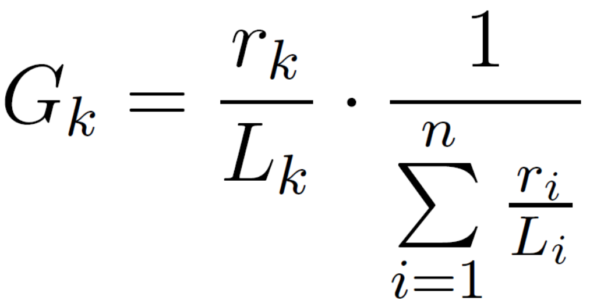
说明：r 为比对上基因的 reads 数目，L 为基因的长度
- 基于 gene catalogue 中各基因在各样品中的丰度信息，进行基本信息统计，core-pan 基因分析，样品间相关性分析，及基因数目韦恩图分析；
表 3.4.2 gene catalogue 基本信息统计表
| {{x|safe}} | {% endfor %}
sample 表示样本名称（Unigenes 表示非冗余基因）；
ORFs NO. 表示 sample 中基因的数目；
integrity:start 表示只含有起始密码子的基因数目及百分比；
integrity:end 表示只含有终止密码子的基因数目及百分比；
integrity:none 表示没有起始密码子也没有终止密码子的基因数目及百分比；
integrity:all 表示完整基因（既有起始密码子也有终止密码子）数目的百分比；
Total Len.(Mbp) 表示 gene catalogue 中基因的总长，单位是百万；
Average Len. 表示 gene catalogue 中基因的平均长度；
GC Percent 表示预测的 gene catalogue 中基因的整体 GC 含量值；
图 3.4.2 gene catalogue 长度分布统计
说明：纵轴 Counts 表示 gene catalogue 中基因的数目；横轴表示 gene catalogue 中基因的长度。
从基因在各样品中的丰度表出发，可以获得各样品的基因数目信息，通过随机抽取不同数目的样品，可以获得不同数目样品组合间的基因数目，由此我们构建和绘制了 Core 和 Pan 基因的稀释曲线，图片展示如下：
图 3.4.3 core-pan 基因稀释曲线
|
|
说明：a) Core基因稀释曲线；b) Pan基因稀释曲线。横坐标表示抽取的样品个数；纵坐标表示抽取的样品组合的基因数目。
为了考察组与组间的基因数目差异情况，绘制了组间基因数目差异箱图，展示结果如下：
图 3.4.4.1 组间基因数目差异箱图
说明：横坐标为各个分组信息；纵坐标为基因数目。
为了考察指定样品（组）间的基因数目分布情况，分析不同样品（组）之间的基因共有、特有信息，绘制了韦恩图(Venn Graph)或花瓣图，展示结果如下：
图 3.4.4.2 基因数目韦恩图（花瓣图）分析
说明：当样本（组）数小于5时，展示韦恩图，当样本（组）数超过5个时，展示花瓣图；图中，每个圈代表一个样品；圈和圈重叠部分的数字代表样品之间共有的基因个数； 没有重叠部分的数字代表样品的特有基因个数。
生物学重复是任何生物学实验所必须的，高通量测序技术也不例外。样品间基因丰度相关性是检验实验可靠性和样本选择是否合理性的重要指标。相关系数越接近1，表明样品之间基因丰度模式的相似度越高。
图 3.4.5 样品间相关系数热图
说明：图中，不同颜色代表 spearman 相关系数的高低；相关系数与颜色间的关系见右侧图例说明；颜色越深代表样品间相关系数的绝对值越大； 椭圆向左偏表明相关系数为正，右偏为负；椭圆越扁说明相关系数的绝对值越大。
- genes 与物种数据库进行比对：DIAMOND软件[24]将 Unigenes 与从 NCBI 的 NR(Version: 2018.01) 数据库中抽提出的细菌(Bacteria)、真菌(Fungi)、古菌(Archaea)和病毒(Viruses)序列进行比对（blastp，evalue <= 1e-5）[6]；
- LCA算法：由于每一条序列可能会有多个比对结果，得到多个不同的物种分类信息，为了保证其生物意义，利用 MEGAN[25] 软件的LCA算法，得到该序列最终的物种注释信息；
- 从 LCA 注释结果及基因丰度表出发，获得各个样品在各个分类层级（界门纲目科属种）上的丰度信息，对于某个物种在某个样品中的丰度，等于注释为该物种的基因丰度的加和[7,26,14]；
- 从 LCA 注释结果及基因丰度表出发，获得各个样品在各个分类层级（界门纲目科属种）上的基因数目表，对于某个物种在某个样品中的基因数目，等于在注释为该物种的基因中，丰度不为 0 的基因数目；
- 从各个分类层级（界门纲目科属种）上的丰度表出发，进行 Krona 分析，相对丰度概况展示，丰度聚类热图展示，PCA 和 NMDS 降维分析，Anosim组间（内）差异分析，组间差异物种的Metastat和LEfSe多元统计分析；
为了综合而直观的展示各样品中，不同分类层级的物种相对丰度，我们采用 Krona[27] 对物种注释结果进行可视化展示，Krona 示例图如下所示，详细结果 请点击。
图 3.5.2.1 使用 Krona 对物种注释结果进行展示（示例图）
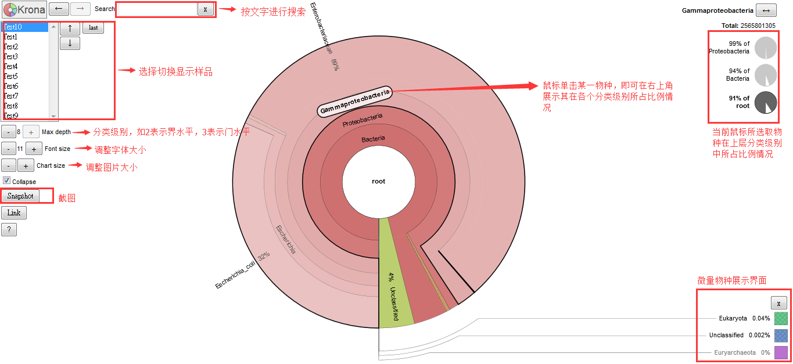
说明：图中，圆圈从内到外依次代表不同的分类级别（界门纲目科属种）；扇形的大小代表不同物种的相对比例；更多详细的信息请参考 KRONA 展示结果详解。
从不同分类层级的相对丰度表出发，选取出在各样品（组）中的最大相对丰度排名前 10 的物种，并将其余的物种设置为 Others，绘制出各样品对应的物种注释结果在不同分类层级上的相对丰度柱形图。
图 3.5.2.2 门水平和属水平的物种相对丰度柱形图（样品）
|
|
说明：a）门水平相对丰度柱形图；b）属水平相对丰度柱形图。横轴表示样品名称；纵轴表示注释到某类型的物种的相对比例；各颜色区块对应的物种类别见右侧图例。
图 3.5.2.3 门水平和属水平的物种相对丰度柱形图（组）
|
|
说明：a）门水平相对丰度柱形图；b）属水平相对丰度柱形图。横轴表示样品名称；纵轴表示注释到某类型的物种的相对比例；各颜色区块对应的物种类别见右侧图例。
从不同分类层级的相对丰度表出发，选取丰度排名前 35 的属及它们在每个样品中的丰度信息绘制热图，并从物种层面进行聚类，便于结果展示和信息发现，从而找出样品中聚集较多的物种，结果展示见下图：
图 3.5.3 属水平基因数目及丰度聚类热图
|
|
说明：a) Unigenes 注释数目统计热图：横轴为样品名称；纵轴为物种信息；不同颜色代表 Unigenes 数目的高低；b) 属水平相对丰度聚类热图：横向为样品信息；纵向为物种信息；图中左侧的聚类树为物种聚类树；中间热图对应的值为每一行物种相对丰度经过标准化处理后得到的 Z 值，即一个样品在某个分类上的 Z 值为样品在该分类上的相对丰度和所有样品在该分类的平均相对丰度的差除以所有样品在该分类上的标准差所得到的值。
目前适用于生态学研究的降维分析主要是主成分分析 (PCA，Principal Component Analysis)和无度量多维标定法（NMDS，Non-Metric Multi-Dimensional Scaling）分析。 其中，PCA是基于线型模型的一种降维分析，它应用方差分解的方法对多维数据进行降维，从而提取出数据中最主要的元素和结构[28]；PCA 能够提取出最大程度反映样品间差异的两个坐标轴， 从而将多维数据的差异反映在二维坐标图上，进而揭示复杂数据背景下的简单规律。而NMDS是非线性模型，其目的是为了克服线性模型的缺点，更好地反映生态学数据的非线性结构[29]，应用NMDS分析， 根据样本中包含的物种信息，以点的形式反映在多维空间上，而不同样本间的差异程度则是通过点与点间的距离体现，能够反映样本的组间或组内差异等。 基于不同分类层级的物种丰度表， 我们进行了 PCA 和 NMDS分析，如果样品的物种组成越相似，则它们在 PCA 和 NMDS 图中的距离则越接近。
图 3.5.4 基于门水平的物种 PCA 和 NMDS 结果展示
|
|
说明：a）门水平PCA分析，横坐标表示第一主成分，百分比则表示第一主成分对样品差异的贡献值；纵坐标表示第二主成分，百分比表示第二主成分对样品差异的贡献值；图中的每个点表示一个样品，同一个组的样品使用同一种颜色表示；b）门水平NMDS分析，图中的每个点表示一个样品，点与点之间的距离表示差异程度，同一个组的样品使用同一种颜色表示；Stress小于0.2时，表明NMDS分析具有一定的可靠性。
主坐标分析（PCoA，Principal Co-ordinates Analysis），是通过一系列的特征值和特征向量排序从多维数据中提取出最主要的元素和结构。 我们基于Bray-Curtis 距离来进行PCoA分析，并选取贡献率最大的主坐标组合进行作图展示。如果样品距离越接近，表示物种组成结构越相似， 因此群落结构相似度高的样品倾向于聚集在一起，群落差异很大的样品则会远远分开。 基于不同分类层级的物种丰度表得到Bray-Curtis 距离矩阵，我们进行了 PCoA分析。基于门水平的PCoA分析结果展示如下：
图 3.5.5 基于门水平的物种 PCoA 结果展示
说明：横坐标表示一个主成分，纵坐标表示另一个主成分，百分比表示主成分对样品差异的贡献值；图中的每个点表示一个样品，同一个组的样品使用同一种颜色表示。
Anosim分析是一种非参数检验，用来检验组间的差异是否显著大于组内差异，从而判断分组是否有意义，详细计算过程可查看Anosim。基于物种门水平的Anosim分析结果如下：
图 3.5.6 基于门水平的Anosim分析
说明：横向为分组信息，纵向为距离信息。Between为两组合并信息，between中位线高于另外两组中位线为分组信息较好。R-value介于（-1，1）之间，R-value大于0，说明组间差异显著。R-value小于0，说明组内差异大于组间差异，统计分析的可信度用 P-value 表示，P< 0.05 表示统计具有显著性。
为了研究不同样品的相似性，还可以通过对样品进行聚类分析，构建样品的聚类树。Bray-Curtis 距离是系统聚类法中使用最普遍的一个距离指标，它主要用来刻画样品间的相近程度，它的大小是进行样品分类的主要依据。
从基因在各样品中的丰度表出发，以 Bray-Curtis 距离矩阵进行样品间聚类分析，并将聚类结果与各样品在门水平上的物种相对丰度整合进行展示。
图 3.5.7 基于 Bray-Curtis 距离的聚类树
说明：图中，左侧是 Bray-Curtis 距离聚类树结构；右侧的是各样品在门水平上的物种相对丰度分布图。
为了研究组间具有显著性差异的物种，从不同层级的物种丰度表出发，利用 Metastats[30]方法对组间的物种丰度数据进行假设检验得到 p 值，通过对 p 值的校正，得到 q 值；最后根据 q 值筛选具有显著性差异的物种，并绘制差异物种在组间的丰度分布箱图。
图 3.5.8 显著差异物种的箱图展示树
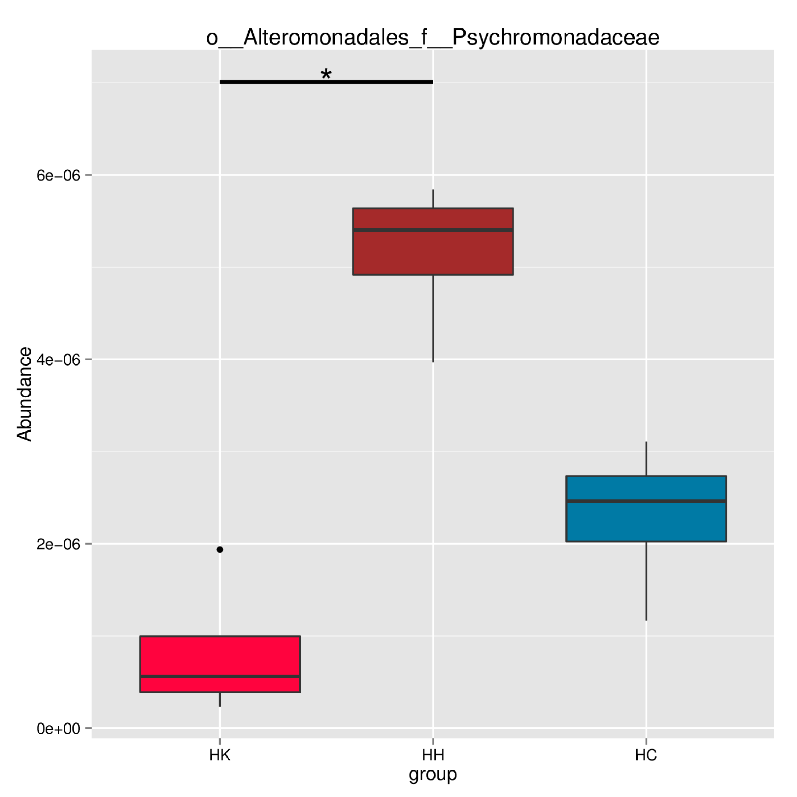
说明：图中，横轴为样品分组；纵向为对应物种的相对丰度。横线代表具有显著性差异的两个分组，没有则表示此物种在两个分组间不存在差异。“＊”表示两组间差异显著（q value < 0.05），“＊＊”表示两组间差异极显著（q value < 0.01）。
为了筛选组间具有显著差异的物种Biomarker，首先通过秩和检验的方法检测不同分组间的差异物种并通过LDA（线性判别分析）实现降维并评估差异物种的影响大小， 即得到LDA score [31]；组间差异物种的LEfSe分析结果包括三部分，分别是LDA值分布柱状图，进化分支图（系统发育分布）和组间具有统计学差异的Biomarker在不同组中丰度比较图。差异物种的LDA值分布图和进化分支图如下：
图 3.5.9 差异物种的LDA值分布图和进化分支图
| 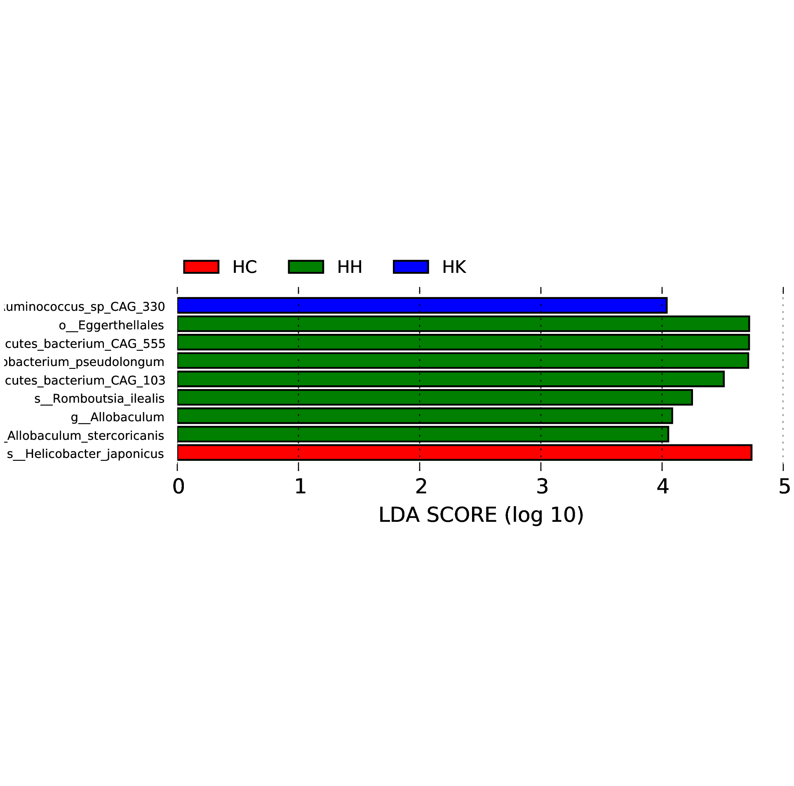 | 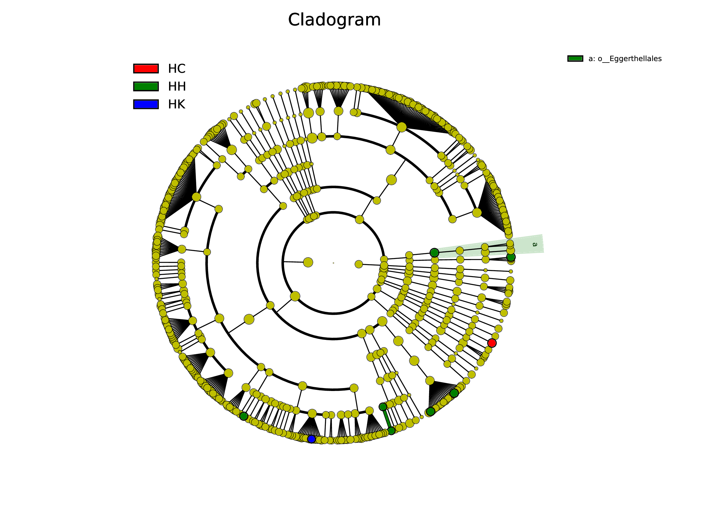 |
说明：上图为差异物种的LDA值分布图，LDA值分布柱状图中展示了LDA Score大于设定值（默认设置为4）的物种，即组间具有统计学差异的Biomarker， 柱状图的长度代表差异物种的影响大小（即为 LDA Score）。下图为差异物种的进化分支图，由内至外辐射的圆圈代表了由门至属（或种）的分类级别。 在不同分类级别上的每一个小圆圈代表该水平下的一个分类，小圆圈直径大小与相对丰度大小呈正比。着色原则：无显著差异的物种统一着色为黄色， 差异物种Biomarker跟随组进行着色，红色节点表示在红色组别中起到重要作用的微生物类群，绿色节点表示在绿色组别中起到重要作用的微生物类群。图中英文字母表示的物种名称在右侧图例中进行展示。
目前常用的功能数据库主要有：
Kyoto Encyclopedia of Genes and Genomes (KEGG)[32,33]; Version: 2018.01；
Evolutionary genealogy of genes: Non-supervised Orthologous Groups (eggNOG)[34]; Version: 4.5；
Carbohydrate-Active enzymes Database (CAZy)[35]; Version: 2018.01；
KEGG 数据库于 1995 年由 Kanehisa Laboratories 推出 0.1 版，目前发展为一个综合性数据库，其中最核心的为 KEGG PATHWAY 和 KEGG ORTHOLOGY 数据库。 在 KEGG ORTHOLOGY 数据库中，将行使相同功能的基因聚在一起，称为 Ortholog Groups (KO entries)，每个 KO 包含多个基因信息，并在一至多个 pathway 中发挥作用。 而在 KEGG PATHWAY 数据库中，将生物代谢通路划分为 6 类，分别为：细胞过程（Cellular Processes）、环境信息处理（Environmental Information Processing）、 遗传信息处理（Genetic Information Processing）、人类疾病（Human Diseases）、新陈代谢（Metabolism）、生物体系统（Organismal Systems）， 其中每类又被系统分类为二、三、四层。第二层目前包括有 57个种子 pathway；第三层即为其代谢通路图；第四层为每个代谢通路图的具体注释信息。
eggNOG 数据库是利用 Smith-Waterman 比对算法对构建的基因直系同源簇 (Orthologous Groups) 进行功能注释，eggNOG V5 涵盖了 5090 个物种的基因，构建了约 4.4M Orthologous Groups。
CAZy 数据库是研究碳水化合物酶的专业级数据库，主要涵盖 6 大功能类：糖苷水解酶（Glycoside Hydrolases ，GHs），糖基转移酶（Glycosyl Transferases，GTs）， 多糖裂合酶（Polysaccharide Lyases，PLs），碳水化合物酯酶（Carbohydrate Esterases，CEs），辅助氧化还原酶(Auxiliary Activities , AAs)和碳水化合物结合模块（Carbohydrate-Binding Modules， CBMs）。
- 序列比对：使用DIAMOND软件将 Unigenes 与各功能数据库进行比对（blastp，evalue <= 1e-5）[26,14]；
- 比对结果过滤：对于每一条序列的 比对结果，DIAMOND 参数--max-target-seqs 1，保留唯一比对结果[16,14,36,37]；
- 从比对结果出发，统计不同功能层级的相对丰度（各功能层级的相对丰度等于注释为该功能层级的基因的相对丰度之和[7,14]），其中，KEGG 数据库划分为 6 个层级，eggNOG 数据库划分为 3 个层级，
CAZy 数据库划分为 3 个层级，各数据库的详细划分层级如下所示；
数据库名称 划分层级 该层级的描述 KEGG level1 KEGG 代谢通路第一层级 6 大代谢通路； KEGG level2 KEGG 代谢通路第二层级 57 种子 pathway； KEGG level3 KEGG pathway id（例：map00010）； KEGG KO KEGG ortholog group (例：K00010)； KEGG ec KEGG EC Number（例：EC 3.4.1.1）； eggNOG level1 24 大功能类； eggNOG level2 ortholog group description； CAZy level1 6 大功能类； CAZy level2 CAZy family（例：GT51）； CAZy level3 EC number（例：murein polymerase (EC 2.4.1.129)）；
- 从功能注释结果及基因丰度表出发，获得各个样品在各个分类层级上的基因数目表，对于某个功能在某个样品中的基因数目，等于在注释为该功能的基因中，丰度不为 0 的基因数目；
- 从各个分类层级上的丰度表出发，进行注释基因数目统计，相对丰度概况展示，丰度聚类热图展示，PCA和NMDS降维分析，基于功能丰度的Anosim组间（内）差异分析，代谢通路比较分析，组间功能差异的Metastat和LEfSe分析；
从 Unigenes 注释结果出发，绘制各个数据库的注释基因数目统计图，展示结果如下图所示：
图 3.6.2 各数据库注释基因数目统计图
-
{% for gene_count_png in func_gene_count_png_list %}
-
说明：条形图上的数字代表注释上的 Unigenes 数目；其余一个坐标轴是各数据库中 level1 各功能类的代码，代码的解释见对应的图例说明。
根据各个数据库的注释结果，绘制了样品（组）在各个数据库中对应层级上的相对丰度统计图。 以各样品在各个数据库中level1 层级上的相对丰度统计图为例展示。其余层级为相对丰度前10的注释结果。
图 3.6.3 功能注释在 level1 上的相对丰度柱形图
-
{% for relative_abundance_png in func_relative_abundance_png_list %}
-
说明：纵轴表示注释到某功能类的相对比例；横轴表示样品名称；各颜色区块对应的功能类别见右侧图例。
根据所有样品在各个数据库中的功能注释及丰度信息，选取丰度排名前 35 的功能及它们在每个样品中的丰度信息绘制热图，并从功能差异层面进行聚类。
图 3.6.4 功能丰度聚类热图
-
{% for abundance_cluster_png in func_abundance_cluster_heatmap_png_list %}
-
说明：横向为样品信息；纵向为功能注释信息；图中左侧的聚类树为功能聚类树；中间热图对应的值为每一行功能相对丰度经过标准化处理后得到的 Z 值。
基于不同数据库在各个分类层级的功能丰度进行 PCA 和 NMDS 降维分析，如果样品的功能组成越相似，则它们在降维图中的距离越接近。基于KEGG的KO、eggNOG的OG和CAZY 的 Level2 层级的功能丰度进行PCA 和 NMDS 分析的结果展示如下：
图 3.5.5 基于功能丰度的 PCA 和 NMDS 分析结果展示
-
{% for pca_png in func_abundance_pca_nmds_png_list %}
-
说明：a）PCA结果展示，横坐标表示第一主成分，百分比则表示第一主成分对样品差异的贡献值； 纵坐标表示第二主成分，百分比表示第二主成分对样品差异的贡献值；图中的每个点表示一个样品，同一个组的样品使用同一种颜色表示。b）NMDS结果展示，图中的每个点表示一个样品， 点与点之间的距离表示差异程度，同一个组的样品使用同一种颜色表示；Stress小于0.2时，表明NMDS分析具有一定的可靠性。
基于不同数据库在各个分类层级的功能丰度计算Bray-Curtis 距离，然后进行 PCoA 分析，如果样品的功能组成越相似，则它们在降维图中的距离越接近。基于KEGG、eggNOG和CAZY 的 Level1 层级的功能丰度进行PCoA 分析的结果展示如下：
图 3.6.6 基于功能丰度的Bray-Curtis 距离的PCoA分析结果展示
-
{% for pcoa_png in func_abundance_pcoa_png_list %}
-
说明：PCoA结果展示，横坐标表示第一主成分，百分比则表示第一主成分对样品差异的贡献值； 纵坐标表示第二主成分，百分比表示第二主成分对样品差异的贡献值；图中的每个点表示一个样品，同一个组的样品使用同一种颜色表示。
基于KEGG的KO、eggNOG的Level1和CAZY 的 Level2 层级的功能丰度进行Anosim 分析，用于检验基于功能丰度的组间差异是否显著大于组内差异。结果展示如下：
图 3.6.7 基于功能丰度的 Anosim 分析
-
{% for anosim_png in func_abundance_anosim_png_list %}
-
说明：横向为分组信息，纵向为距离信息。Between为两组合并信息，between中位线高于另外两组中位线为分组信息较好。 R-value介于（-1，1）之间，R-value大于0，说明组间差异显著。R-value小于0，说明组内差异大于组间差异，统计分析的可信度用 P-value 表示，P< 0.05 表示统计具有显著性。
为了研究不同样品的相似性，还可以通过对样品进行聚类分析，构建样品的聚类树。Bray-Curtis 距离是系统聚类法中使用最普遍的一个距离指标，它主要用来刻画样品间的相近程度，它的大小是进行样品分类的主要依据。
从各个数据库的功能丰度表出发，以 Bray-Curtis 距离矩阵进行样品间聚类分析，并将聚类结果与各样品在各数据库第一层级上的功能相对丰度整合展示。
图 3.6.8 基于Bray-Curtis距离的聚类树
-
{% for cluster_tree_png in func_abundance_cluster_tree_png_list %}
-
说明：从上至下依次为 KEGG, eggNOG, CAZy 的结果展示。图左侧是 Bray-Curtis 距离聚类树结构；右侧为各层是各样品在第一层级上的功能相对丰度分布。
为了研究组间具有显著性差异的功能，从不同层级的功能相对丰度表出发，利用 Metastats 方法对组间的功能丰度数据进行假设检验得到 p 值，通过对 p 值的校正， 得到 q 值；最后根据 q 值筛选具有显著性差异的功能，并绘制差异功能在组间的丰度分布箱图。
图 3.6.9.1 显著性差异功能箱图展示
-
{% for metastat_png in func_metastat_png_list %}
-
说明：从上至下依次为 KEGG, eggNOG, CAZy 的结果展示，图中横轴为样品分组，纵向为对应功能的相对丰度。横线代表具有显著性差异的两个分组，没有则表示此功能在两个分组间不存在差异。 “*”表示两组间差异显著（q value < 0.05），“**”表示两组间差异极显著（q value < 0.01）。
根据组间具有差异的功能进行PCA分析并绘制丰度聚类热图，展示结果如下:
图 3.6.9.2 基于显著性差异功能的 PCA 分析和丰度聚类热图
-
{% for pca_cluster in func_metastat_pca_heatmap_png_list %}
-
说明：从上至下依次为 KEGG, eggNOG, CAZy 的结果展示。a) 为显著性差异功能的丰度聚类热图：横向为样品信息；纵向为功能注释信息； 图中左侧的聚类树为功能聚类树；中间热图对应的值为每一行功能相对丰度经过标准化处理后得到的 Z 值；b) 为显著性差异功能的 PCA 图：横坐标表示第一主成分， 百分比则表示第一主成分对样品差异的贡献值；纵坐标表示第二主成分，百分比表示第二主成分对样品差异的贡献值；图中的每个点表示一个样品，同一个组的样品使用同一种颜色表示。
为了研究不同分组（不同样品）在代谢通路图中的差异，绘制了代谢通路网页版结果展示，整体网页版报告分为两部分：
第一部分为 KEGG pathway overview 图，图中蓝色线条展示了此次项目参与的代谢通路信息，在代谢通路图中，节点代表各种化合物，边代表一系列的酶类反应；
第二部分为注释到的 pathway 代谢通路图，在代谢通路图中，节点代表各种化合物, 方框代表酶类信息（默认边框为黑色，背景为白色），不同颜色深浅的方框背景色代表注释为该酶类的不同 Unigenes 数目， 黄色背景的酶类代表在分组间具有显著差异的酶类（若没有进行显著差异分析，则没有此部分信息）。
展示结果点击图 3.6.10 多样品代谢通路比较分析示例图
不管是人肠道微生物还是其他环境微生物中，抗性基因是普遍存在的。抗生素的滥用导致人体和环境中微生物群落发生不可逆的变化，对人体健康和生态环境造成风险， 因此抗性基因的相关研究受到了研究者的广泛关注[38]。CARD是近年来新出现的抗性基因数据库，它具有信息全面，对用户友好，更新维护及时等优势。该数据库的核心构成 是Antibiotic Resistance Ontology（ARO），它整合了序列、抗生素抗性、作用机制、ARO之间的关联等信息，并在线提供ARO与PDB、NCBI等数据库的接口[39]。
- 使用CARD数据库(v2.0.1)提供的Resistance Gene Identifier (RGI)软件将 Unigenes 与CARD数据库进行比对（RGI内置blastp，采用bitscore值对比对结果进行评分[40]）；
- 根据RGI的比对结果，结合Unigenes的丰度信息，统计出各ARO的相对丰度；
- 从ARO的丰度出发，进行丰度柱形图展示，丰度聚类热图展示，丰度分布圈图展示，组间ARO差异分析，抗性基因（注释到ARO的unigenes）物种归属分析等（对部分名称较长的ARO，用其前三个单词与下划线缩写的形式展示）。
从抗性基因的相对丰度表出发，计算各个样品中ARO的含量和百分比，筛选出最大丰度排名前20的ARO结果展示如下：
图 3.7.2.1 不同ARO在各样品中的丰度柱形图
|
|
a）表示ARO在各个样品中所有基因的相对丰度，单位 ppm，是将原始相对丰度数据放大106倍的结果；b）表示top20 ARO在所有 ARO中的相对丰度，others为非top 20 ARO相对丰度总和。
为了更直观地从整体上观察各样品中ARO的丰度占比，更加直观的展示各ARO丰度的整体分布情况，选出最大丰度top10的ARO绘制Overview圈图，展示如下：
图 3.7.2.2 抗性基因Overview圈图
说明：圈图分为两个部分，右侧为样品信息，左侧为 ARO信息。内圈不同颜色表示不同的样品和 ARO，刻度为相对丰度，单位为 ppm， 左侧为某ARO各个样本中的相对丰度之和，右侧为各ARO在某样本中的相对丰度之和；外圈左侧为某ARO中各个样品的相对百分含量，外圈右侧为某样品中各ARO的相对百分含量。
CARD数据库中对抗性基因的抗性机制（Resistance Mechanism）进行归类， 根据这些抗性基因的作用机制与物种的关系，绘制如下抗性机制分布图：
图 3.7.2.3 抗性机制与物种Overview圈图
说明：圈图分为两个部分，右侧为门水平物种信息，左侧为抗性机制信息。内圈不同颜色表示不同物种和抗性的抗性机制，刻度为基因数目；左侧为物种中含有该类抗性机制的抗性基因数目之和， 右侧为不同抗性机制中该物种含有的抗性基因数目之和；外圈左侧为各物种中抗性基因占其所属抗性机制抗性基因的相对比例，外圈右侧为各抗性机制中抗性基因占其所属物种中抗性基因的相对比例
为了反映各抗性基因类型（ARO） 在各样品中的分布情况，绘制ARO分布的黑白热图；同时，根据 ARO 在各样品中的丰度信息，选取排名前 30 的 ARO绘制丰度聚类热图，结果展示如下：
图 3.7.3 ARO分布及丰度聚类热图
|
|
说明：a）为ARO分布情况热图，横轴为样品名称，右侧纵轴为抗性基因类型 ARO 名称，黑色表示样品中含有该 ARO，白色表示样品中没有该 ARO；b）为ARO丰度聚类热图， 右侧纵轴为ARO 名称，左侧纵轴的聚类树为 ARO聚类树，中间热图对应的值为每一行 ARO 相对丰度经过标准化处理后得到的 Z 值。
基于抗性基因的丰度进行Anosim 分析，用于检验组间差异是否显著大于组内差异。结果展示如下：
图 3.7.4基于抗性基因丰度的Anosim分析
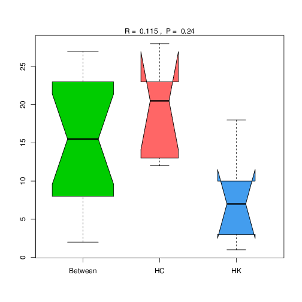
说明：横向为分组信息，纵向为距离信息。Between为两组合并信息，between中位线高于另外两组中位线为分组信息较好。R-value介于（-1，1）之间， R-value大于0，说明组间差异显著。R-value小于0，说明组内差异大于组间差异，统计分析的可信度用 P-value 表示，P< 0.05 表示统计具有显著性。
为了考察样品组间的抗性基因数目与ARO数目差异情况，绘制了组间抗性基因数目和ARO数目差异箱图，展示结果如下:
图 3.7.5.1 抗性基因及ARO数目差异箱图
|
|
说明：a）表示各组间抗性基因数目差异，b）为各组间ARO数目差异。
为了考察指定样品（组）间的抗性基因数目分布情况，分析不同样品（组）之间的基因共有、特有信息，绘制了韦恩图(或花瓣图)，展示结果如下:
图 3.7.5.2 各样品（组间）抗性基因箱韦恩图（花瓣图）分析
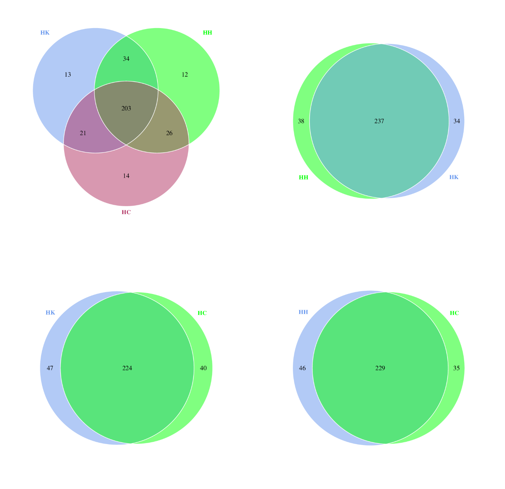
说明：当样本（组）数小于5时，展示韦恩图，当样本（组）数超过5个时，展示花瓣图；图中，每个圈代表一个样品；圈和圈重叠部分的数字代表样品之间共有的抗性基因个数； 没有重叠部分的数字代表样品的特有抗性基因个数。
- [1] Chen, K., & Pachter, L. (2005). Bioinformatics for whole-genome shotgun sequencing of microbial communities. PLoS computational biology, 1(2), e24.
- [2] Handelsman, J., Rondon, M. R., Brady, S. F., Clardy, J., & Goodman, R. M. (1998). Molecular biological access to the chemistry of unknown soil microbes: a new frontier for natural products. Chemistry & biology, 5(10), R245-R249.
- [3] Tringe, S. G., & Rubin, E. M. (2005). Metagenomics: DNA sequencing of environmental samples. Nature reviews genetics, 6(11), 805-814.
- [4] Tringe, S. G., Von Mering, C., Kobayashi, A., Salamov, A. A., Chen, K., Chang, H. W., ... & Rubin, E. M. (2005). Comparative metagenomics of microbial communities. Science, 308(5721), 554-557.
- [5] Raes, J., Foerstner, K. U., & Bork, P. (2007). Get the most out of your metagenome: computational analysis of environmental sequence data. Current opinion in microbiology, 10(5), 490-498.
- [6] Karlsson FH, Tremaroli V, Nookaew I, Bergstrom G, Behre CJ, Fagerberg B, Nielsen J, Backhed F: Gut metagenome in European women with normal, impaired and diabetic glucose control. Nature 2013, 498(7452):99-103.
- [7] Karlsson F H, Fåk F, Nookaew I, et al. Symptomatic atherosclerosis is associated with an altered gut metagenome[J]. Nature communications, 2012, 3: 1245.
- [8] Scher J U, Sczesnak A, Longman R S, et al. Expansion of intestinal Prevotella copri correlates with enhanced susceptibility to arthritis[J]. Elife, 2013, 2: e01202.
- [9] Dinghua Li, Chi-Man Liu, Ruibang Luo, Kunihiko Sadakane, Tak-Wah Lam, MEGAHIT: an ultra-fast single-node solution for large and complex metagenomics assembly via succinct de Bruijn graph, Bioinformatics, Volume 31, Issue 10, 15 May 2015, Pages 1674–1676
- [10] Qin J, Li R, Raes J, et al. A human gut microbial gene catalogue established by metagenomic sequencing[J]. nature, 2010, 464(7285): 59-65.
- [11] Nielsen H B, Almeida M, Juncker A S, et al. Identification and assembly of genomes and genetic elements in complex metagenomic samples without using reference genomes[J]. Nature biotechnology, 2014, 32(8): 822-828.
- [12] Zeller G, Tap J, Voigt A Y, et al. Potential of fecal microbiota for early‐stage detection of colorectal cancer[J]. Molecular systems biology, 2014, 10(11): 766.
- [13] Sunagawa S, Coelho L P, Chaffron S, et al. Structure and function of the global ocean microbiome[J]. Science, 2015, 348(6237): 1261359.
- [14] Li J, Jia H, Cai X, et al. An integrated catalog of reference genes in the human gut microbiome[J]. Nature biotechnology, 2014, 32(8): 834-841.
- [15] Oh J, Byrd A L, Deming C, et al. Biogeography and individuality shape function in the human skin metagenome[J]. Nature, 2014, 514(7520): 59-64.
- [16] Qin N, Yang F, Li A, et al. Alterations of the human gut microbiome in liver cirrhosis[J]. Nature, 2014.
- [17] Mende D R, Waller A S, Sunagawa S, et al. Assessment of metagenomic assembly using simulated next generation sequencing data[J]. PloS one, 2012, 7(2): e31386.
- [18] Zhu, Wenhan, Alexandre Lomsadze, and Mark Borodovsky. "Ab initio gene identification in metagenomic sequences." Nucleic acids research 38.12 (2010): e132-e132
- [19] Li W, Godzik A: Cd-hit: a fast program for clustering and comparing large sets of protein or nucleotide sequences. Bioinformatics 2006, 22(13):1658-1659.
- [20] Fu L, Niu B, Zhu Z, Wu S, Li W: CD-HIT: accelerated for clustering the next-generation sequencing data. Bioinformatics 2012, 28(23):3150-3152.
- [21] Villar E, Farrant G K, Follows M, et al. Environmental characteristics of Agulhas rings affect interocean plankton transport[J]. Science, 2015, 348(6237): 1261447.
- [22] Cotillard A, Kennedy S P, Kong L C, et al. Dietary intervention impact on gut microbial gene richness[J]. Nature, 2013, 500(7464): 585-588.
- [23] Le Chatelier E, Nielsen T, Qin J, et al. Richness of human gut microbiome correlates with metabolic markers[J]. Nature, 2013, 500(7464): 541-546.
- [24] Buchfink B, Xie C, Huson DH. Fast and sensitive protein alignment using DIAMOND. Nat Methods 2015;12:59-60.
- [25] Huson, Daniel H., et al. "Integrative analysis of environmental sequences using MEGAN4." Genome research 21.9 (2011): 1552-1560.
- [26] Feng Q, Liang S, Jia H, et al. Gut microbiome development along the colorectal adenoma–carcinoma sequence[J]. Nature communications, 2015, 6.
- [27] Ondov B D, Bergman N H, Phillippy A M. Interactive metagenomic visualization in a Web browser[J]. BMC bioinformatics, 2011, 12(1): 385.
- [28] Rao C R. The Use and Interpretation of Principal Component Analysis in Applied Research[J]. Sankhyā: The Indian Journal of Statistics, Series A (1961-2002), 1964, 26(4):329-358.
- [29] Legendre P, Legendre L. Numerical ecology, 2nd edition[J].1998.
- [30] White J R, Nagarajan N, Pop M. Statistical methods for detecting differentially abundant features in clinical metagenomic samples[J]. PLoS Comput Biol, 2009, 5(4): e1000352.
- [31] Segata N, Izard J, Waldron L, et al. Metagenomic biomarker discovery and explanation[J]. Genome Biology, 2011, 12(6):1-18.
- [32] Kanehisa M, Goto S, Hattori M, Aoki-Kinoshita KF, Itoh M, Kawashima S, et al. (2006). From genomics to chemical genomics: new developments in KEGG. Nucleic Acids Res 34(Database issue): D354–7.
- [33] Kanehisa M, Furumichi M, Mao T, et al. KEGG: new perspectives on genomes, pathways, diseases and drugs[J]. Nucleic Acids Research, 2017, 45(D1):D353.
- [34] Jaime Huerta-Cepas, Damian Szklarczyk, Kristoffer Forslund, Helen Cook, Davide Heller, Mathias C. Walter, Thomas Rattei, Daniel R. Mende, Shinichi Sunagawa, Michael Kuhn, Lars Juhl Jensen, Christian von Mering, Peer Bork; eggNOG 4.5: a hierarchical orthology framework with improved functional annotations for eukaryotic, prokaryotic and viral sequences, Nucleic Acids Research, Volume 44, Issue D1, 4 January 2016, Pages D286–D293
- [35] Cantarel BL, Coutinho PM, Rancurel C, Bernard T, Lombard V, Henrissat B (2009) .The Carbohydrate-Active EnZymes database (CAZy): an expert resource for Glycogenomics. Nucleic Acids Res 37:D233-238.
- [36] Qin J, Li Y, Cai Z, et al. A metagenome-wide association study of gut microbiota in type 2 diabetes[J]. Nature, 2012, 490(7418): 55-60.
- [37] Bäckhed F, Roswall J, Peng Y, et al. Dynamics and Stabilization of the Human Gut Microbiome during the First Year of Life[J]. Cell host & microbe, 2015, 17(5): 690-703.
- [38] Martínez J L, Coque T M, Baquero F. What is a resistance gene? Ranking risk in resistomes[J]. Nature Reviews Microbiology, 2014, 13(2):116-23.
- [39] Jia B, Raphenya A R, Alcock B, et al. CARD 2017: expansion and model-centric curation of the comprehensive antibiotic resistance database[J]. Nucleic Acids Research, 2017, 45(D1):D566.
- [40] Mcarthur A G, Waglechner N, Nizam F, et al. The Comprehensive Antibiotic Resistance Database[J]. Antimicrobial Agents & Chemotherapy, 2013, 57(7):3348.
5.1 方法描述/Methods
方法描述/Methods：PDF
信息分析方法描述(中文版)：PDF
信息分析方法描述(英文版)：PDF
5.2 交付文件目录列表
交付文件说明：html
5.3 常见数据格式说明
常见数据格式说明：pdf
5.4 相关软件及链接
MEGAHIT(v1.0.4): https://github.com/voutcn/megahit
Bowtie2( Version: 2.2.4 ): http://bowtie-bio.sourceforge.net/bowtie2/index.shtml
MetaGeneMark（Version: 2.10）:http://exon.gatech.edu/GeneMark/metagenome/Prediction
CD-HIT（Version: 4.5.8): http://www.bioinformatics.org/cd-hit/
5.5 备注
结果文件建议使用Excel或者EditPlus等专业文本编辑器打开。
推荐使用火狐浏览器进行网页版结题报告浏览，下载地址：http://www.firefox.com.cn/download/